import matplotlib.pyplot as plt
import numpy as np
import seaborn as snsCálculo diferencial
Cambio local, sensibilidad y aproximación de funciones
ImportantIdea central
El cálculo diferencial permite describir cómo cambian las funciones ante perturbaciones pequeñas en sus variables. Esta idea da origen a conceptos fundamentales como derivada, derivadas parciales, gradiente, Jacobiano y aproximaciones locales, todos esenciales en modelamiento matemático, optimización y aprendizaje automático.
1.1 Introducción
Muchos algoritmos de machine learning buscan la optimización de una función objetivo con respecto a un conjunto de parámetros deseados para un determinado modelo, los cuales controlan qué tan bien dicho modelo explica las observaciones representadas por la data a nuestra disposición. La búsqueda de parámetros óptimos puede entonces plantearse como un problema de optimización. Algunos ejemplos de tales problemas son los siguientes:
(I) Regresión lineal: Donde el problema radica en encontrar el mejor hiperplano que se ajusta a un determinado conjunto de observaciones, representadas en la práctica como puntos en el espacio \(\mathbb{R}^{n}\). En general, estos problemas se plantean en la forma de ajustes de hiperplanos cuyas ecuaciones son del tipo \(y=A_{1}x_{1}+A_{2}x_{2}+\dots +A_{n}x_{n}\), donde deseamos determinar los coeficientes de regresión \(A_{1},\dots ,A_{n}\) tales que se maximice un determinado valor, llamado valor de verosimilitud. En la segunda parte de estos apuntes, estudiaremos en detalle la construcción de este tipo de modelos y su implementación en Python, usando fundamentalmente la librería Scikit-Learn.
(II) Auto-encoders basados en redes neuronales para la reducción de la dimensión en conjuntos de datos: En un problema de este tipo, existen dos conjuntos de parámetros de interés en nuestros modelos, conocidos como sesgos y ponderadores, donde minimizamos un error de reconstrucción mediante una aplicación repetida de la regla de la cadena, la que, como suele verse en cursos de cálculo, se trata de una metodología que nos permite diferenciar funciones compuestas por otras funciones. Los auto-encoders son modelos de alta complejidad que están fuera del alcance de estos apuntes.
(III) Modelos de mixtura Gaussiana: En estos problemas deseamos modelar distribuciones de probabilidad asociadas a un conjunto de datos mediante la optimización de ciertos parámetros que explican la geometría intrínseca a tales distribuciones, denominados parámetros de forma y escala, suponiendo que éstas distribuciones pueden aproximarse mediante sumas o mixturas de subconjuntos de datos normalmente distribuidos (llamados usualmente componentes de mixtura).
Algunos de los conceptos anteriores se ilustran en la Figura 1.1.
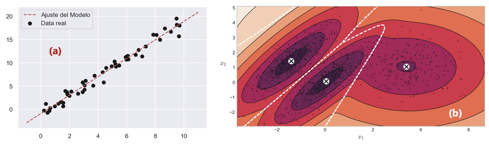
Un elemento central de esta sección es el concepto de función. Una función \(f\) es una entidad que relaciona dos cantidades mediante una correspondencia bien definida. En el resto de estos apuntes, tales cantidades serán típicamente entradas vectoriales del tipo \(\mathbf{x}\in \mathbb{R}^{d}\) y salidas unidimensionales o valores objetivo (lo que escribimos como \(f(\mathbf{x})\)), que asumiremos como pertenencientes a \(\mathbb{R}\), salvo que indiquemos específicamente lo contrario.
En nuestra conceptualización de función, \(\mathbb{R}^{d}\) corresponde al dominio de \(f\), mientras que los valores \(f(\mathbf{x})\) corresponden a las imágenes de \(\mathbf{x}\) bajo \(f\). El conjunto de todas las posibles imágenes conforman el codominio de \(f\), siendo todos estos conceptos completamente análogos a los vistos para las transformaciones lineales estudiadas previamente. Con frecuencia, escribimos
\[ \begin{array}{ll}f:&\mathbb{R}^{d} \longrightarrow \mathbb{R} \\ &\mathbf{x} \longmapsto f\left( \mathbf{x} \right) \end{array} \tag{1.1} \]
para especificar una función.
En esta sección discutiremos fundamentalmente cómo computar gradientes de funciones, lo que frecuentemente resulta esencial para facilitar el proceso de aprendizaje de los algoritmos de machine learning, debido a que los vectores gradientes suelen tener direcciones coincidentes con la posición de mínimos locales en hipersuperficies (superficies en \(\mathbb{R}^{d}\)) que representan una determinada función de costo a optimizar en la construcción de un modelo. Por lo tanto, el cálculo diferencial es una de las herramientas matemáticas fundamentales que necesitamos para entender, al nivel más elemental, lo que son los algoritmos de machine learning.
1.2 Diferenciación de funciones de una variable
A continuación, revisaremos brevemente el concepto de diferenciación de funciones de una variable real, el cual se suele aprender el primer curso de cálculo. Partiremos entonces con funciones del tipo \(f:I\subseteq \mathbb{R} \longrightarrow \mathbb{R}\), donde \(I=(a,b)\) es un intervalo abierto en \(\mathbb{R}\), para las cuales estableceremos la siguiente definición.
Definición 1.1 – Cociente de diferencias: El cociente de diferencias
\[ \frac{\delta y}{\delta x} :=\frac{f\left( x+\delta x\right) -f\left( x\right) }{\delta x} \tag{1.2} \]
Nos permite calcular la pendiente de la recta secante que pasa por los puntos \((x,f(x))\) y \((x+\delta x,f(x+\delta x))\), por los cuales también pasa el gráfico de \(f\). Esta situación se esquematiza en la Figura 1.2.
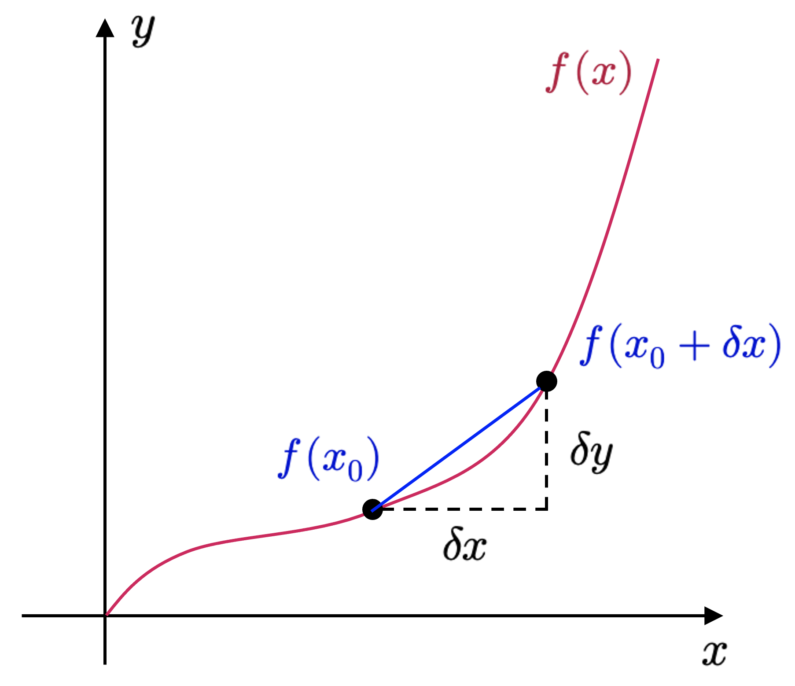
El cociente de diferencias (1.2) también puede ser considerado como la pendiente promedio de \(f\) entre \(x\) y \(x+\delta x\) siempre que \(f\) sea una función lineal. En el límite, cuando \(\delta x \rightarrow 0\), obtenemos la tangente de \(f\) en \(x\), siempre que \(f\) cumpla con ser continua en dicho punto. El valor del cociente de diferencias en este límite se conoce como derivada de \(f\) en \(x\). Tiene sentido, por tanto, la siguiente definición.
Definición 1.2 – Derivada de una función en un punto: Sea \(f:I\subseteq \mathbb{R}\longrightarrow \mathbb{R}\) una función definida explícitamente en el intervalo abierto \(I\) de \(\mathbb{R}\) (y que escribimos como \(y=f(x)\)). Sea \(x_{0}\in I\) y \(h>0\). Definimos entonces la derivada de \(f\) en el punto \(x_{0}\) como
\[ \frac{df}{dx} \left( x_{0}\right) :=\lim_{h\rightarrow 0} \frac{f\left( x_{0}+h\right) -f\left( x_{0}\right) }{h} \tag{1.3} \]
La notación para las derivadas es diversa. De esta manera, la derivada de \(f\) den el punto \(x_{0}\) puede denotarse como \(\frac{df}{dx} \left( x_{0}\right)\), donde \(\frac{d}{dx}\) es el llamado operador diferencial, y que se lee “derivada con respecto a la variable \(x\)”. Otras notaciones incluyen \(f^{\prime }\left( x_{0}\right)\) e incluso \(Df\left( x_{0}\right)\). En estos apuntes, usaremos las dos primeras de manera intercambiable.
Definición 1.3 – Derivada de una función en un conjunto: Sea \(f:I\subseteq \mathbb{R}\longrightarrow \mathbb{R}\) una función definida explícitamente en el intervalo abierto \(I\) de \(\mathbb{R}\). Definimos la derivada de \(f\) en el conjunto \(U\subseteq I\) como
\[ \frac{df}{dx} =\lim_{h\rightarrow 0} \frac{f\left( x+h\right) -f\left( x\right) }{h} \tag{1.4} \]
para todo \(x\in U\).
Definición 1.4 – Diferenciabilidad: Sea \(f:I\subseteq \mathbb{R}\longrightarrow \mathbb{R}\) una función definida explícitamente en el intervalo abierto \(I\) de \(\mathbb{R}\). Si la derivada de \(f\) existe para \(x_{0}\in I\), entonces diremos que \(f\) es diferenciable en el punto \(x_{0}\). Por otro lado, si \(f\) es diferenciable en todos los puntos de \(I\), diremos que \(f\) es diferenciable en todo \(I\).
Ejemplo 1.1: Vamos a usar la definición de derivada (ecuación (1.4)) para calcular la derivada de la función \(y=x^{n}\) para \(n\in \mathbb{N}\) y todo \(x\in \mathbb{R}\). En efecto,
\[ \begin{array}{lll}\displaystyle \frac{dy}{dx} &=&\displaystyle \lim_{h\rightarrow 0} \displaystyle \frac{\left( x+h\right)^{n} -x^{n}}{h} \ \left( \mathrm{aplicamos} \ \mathrm{la} \ \mathrm{formula} \ \mathrm{del} \ \mathrm{binomio} \ \mathrm{de} \ \mathrm{Newton} \right) \\ &=&\displaystyle \lim_{h\rightarrow 0} \displaystyle \frac{\displaystyle \sum\nolimits^{n}_{k=0} \displaystyle \binom{n}{k} x^{n-k}h^{k}-x^{n}}{h} \ \left( \mathrm{recordemos} \ \mathrm{que} \ \displaystyle \binom{n}{k} =\displaystyle \frac{n!}{\left( n-k\right) !k!} \right) \\ &=&\displaystyle \lim_{h\rightarrow 0} \displaystyle \frac{x^{n}+nx^{n-1}h+\overbrace{\frac{n\left( n-1\right) }{2!} x^{n-2}h^{2}+\cdots +h^{n}}^{\rightarrow 0\ \mathrm{cuando} \ h\rightarrow 0} -x^{n}}{h} \\ &=&\displaystyle \frac{x^{n}+nx^{n-1}h-x^{n}}{h} =nx^{n-1}\end{array} \tag{1.5} \]
◼︎
Ejemplo 1.2: Vamos a usar nuevamente la definición de derivada (ecuación (1.4)) para calcular la derivada de la función \(y=\mathrm{sen}(x)\). En efecto,
\[ \begin{array}{lll}\displaystyle \frac{dy}{dx} &=&\displaystyle \lim_{h\rightarrow 0} \displaystyle \frac{\mathrm{sen} \left( x+h\right) -\mathrm{sen} \left( x\right) }{h} \\ &=&\displaystyle \lim_{h\rightarrow 0} \displaystyle \frac{\mathrm{sen} \left( x\right) \cos \left( h\right) -\cos \left( x\right) \mathrm{sen} \left( h\right) -\mathrm{sen} \left( x\right) }{h} \\ &=&\mathrm{sen} \left( x\right) \underbrace{\displaystyle \lim_{h\rightarrow 0} \left( \displaystyle \frac{\cos \left( h\right) -1}{h} \right) }_{=0\ \mathrm{cuando} \ h\rightarrow 0} +\cos \left( x\right) \underbrace{\displaystyle \lim_{h\rightarrow 0} \left( \displaystyle \frac{\mathrm{sen} \left( h\right) }{h} \right) }_{=1\ \mathrm{cuando} \ h\rightarrow 0} \\ &=&\cos \left( x\right) \end{array} \tag{1.6} \]
◼︎
1.2.1 Álgebra de derivadas
A continuación, revisaremos brevemente algunas reglas básicas que nos permitirán calcular las derivadas de funciones compuestas por funciones más simples: Sumas, multiplicaciones, cocientes y composiciones.
TipTeorema 1.1
Sean \(f,g:I\subseteq \mathbb{R} \longrightarrow \mathbb{R}\) funciones diferenciables en el intervalo abierto \(I\) de \(\mathbb{R}\). Entonces se tiene que
- (T1): Derivada de una suma: \(\displaystyle \frac{d}{dx} \left( f\left( x\right) \pm g\left( x\right) \right) =\frac{df}{dx} \left( x\right) \pm \frac{dg}{dx} \left( x\right)\).
- (T2): Derivada de un producto: \(\displaystyle \frac{d}{dx} \left( f\left( x\right) g\left( x\right) \right) =g\left( x\right) \frac{df}{dx} \left( x\right) +f\left( x\right) \frac{dg}{dx} \left( x\right)\).
- (T3): Derivada de un cociente: \(\displaystyle \frac{d}{dx} \left( \frac{f\left( x\right) }{g\left( x\right) } \right) =\frac{g\left( x\right) \frac{df}{dx} \left( x\right) +f\left( x\right) \frac{dg}{dx} \left( x\right) }{\left[ g\left( x\right) \right]^{2} }\).
Un caso particular de (T2) se da cuando \(g(x)=c\) para todo \(x\) en el dominio de \(g\), donde \(c\) es una constante. Como la derivada de una función constante de este tipo es nula para todo \(x\), entonces aplicando la fórmula de la derivada de un producto a \(cf(x)\) para \(c\in \mathbb{R}\) obtenemos
\[ \frac{d}{dx} \left( cf\left( x\right) \right) =c\frac{df}{dx} \left( x\right) =cf^{\prime }\left( x\right) \tag{1.7} \]
Lo que significa que si calculamos la derivada de una función multiplicada por una constante, entonces el resultado es igual a dicha constante multiplicada por la derivada de la función. Al combinar esto con (T1), podemos obtener la fórmula general
\[ \frac{d}{dx} \left( c_{1}f\left( x\right) +c_{2}g\left( x\right) \right) =c_{1}\frac{df}{dx} \left( x\right) +c_{2}\frac{dg}{dx} \left( x\right) \tag{1.8} \]
para \(c_{1}\wedge c_{2}\in \mathbb{R}\). Notemos que, si llamamos \(D\) al operador diferencial, las fórmulas (1.7) y (T1) nos muestran que, para cualquier constante \(c\in \mathbb{R}\) y funciones diferenciables \(f,g\), se tiene que \(D(f+g)=D(f)+D(g)\) y \(D(cf)=cD(f)\). Por lo tanto, este operador (y, por extensión, la derivada) se trata de una transformación lineal definida sobre el cuerpo \(\mathbb{R}\) y el espacio vectorial definido por todas las funciones diferenciables sobre el intervalo abierto \(I=(a,b)\in \mathbb{R}\).
Dado que un requisito esencial de esta asignatura es precisamente el curso de cálculo, no ahondaremos mucho más en el concepto de derivada ni tampoco nos abstraeremos demasiado por el momento. Asumiremos pleno conocimiento de las derivadas de funciones trascendentes, con lo cual, comenzaremos a trabajar algunos ejemplos sencillos.
Ejemplo 1.3: Calcularemos la derivada de la función \(f\) definida como
\[ f\left( x\right) =\frac{a\cos \left( x\right) +b\ln \left( x\right) }{a^{2}+x^{2}} \tag{1.9} \]
Vemos que la función \(f\) no es más que el resultado de una combinación de operaciones algebraicas entre varias funciones más sencillas. Si escribimos \(f(x)=f_{1}(x)/f_{2}(x)\), entonces \(f_{1}(x)=a\cos \left( x\right) +b\ln \left( x\right)\) y \(f_{2}(x)=a^{2}+x^{2}\). Luego debemos aplicar la fórmula de la derivada de un cociente, con lo cual
\[ \begin{array}{lll}f\left( x\right) =\displaystyle \frac{a\cos \left( x\right) +b\ln \left( x\right) }{a^{2}+x^{2}} &\Longrightarrow &f^{\prime }\left( x\right) =\displaystyle \frac{f_{2}\left( x\right) f^{\prime }_{1}\left( x\right) -f_{1}(x)f^{\prime }_{2}\left( x\right) }{\left[ f_{2}\left( x\right) \right]^{2} } \\ &\Longrightarrow &f^{\prime }\left( x\right) =\displaystyle \frac{\left( a^{2}+x^{2}\right) \left( -a\ \mathrm{sen} \left( x\right) +\frac{b}{x} \right) -\left( a\cos \left( x\right) +b\ln \left( x\right) \right) \left( 2x\right) }{\left( a^{2}+x^{2}\right)^{2} } \\ &\Longrightarrow &f^{\prime }\left( x\right) =\displaystyle \frac{\left( a^{2}+x^{2}\right) \left( \frac{b}{x} -a\ \mathrm{sen} \left( x\right) \right) -2x\left( a\cos \left( x\right) +b\ln \left( x\right) \right) }{\left( a^{2}+x^{2}\right)^{2} } \\ &\Longrightarrow &f^{\prime }\left( x\right) =\displaystyle \frac{\frac{a^{2}+x^{2}}{x} \left( b-ax\ \mathrm{sen} \left( x\right) \right) -2x\left( a\cos \left( x\right) +b\ln \left( x\right) \right) }{\left( a^{2}+x^{2}\right)^{2} } \end{array} \tag{1.10} \]
◼︎
1.2.2 Regla de la cadena
Con las fórmulas de derivación dadas hasta ahora, se pueden calcular derivadas de funciones \(f\) para las cuales \(f(x)\) es una suma finita de cocientes o productos de constantes multiplicadas por funciones cuyos argumentos sea únicamente la variable \(x\). Sin embargo, existen funciones que están compuestas por otras funciones que no son posibles de derivar con las reglas de derivación estudiadas previamente, tales como \(f(x)=\mathrm{sen}(x^{2})\) o \(g\left( x\right) =\arctan \left( x^{2}-\ln \left( 1+x\right) \right)\). Tales funciones se denominan composiciones, y pueden escribirse como \(f\left( g\left( x\right) \right)\).
Para derivar una composición de funciones del tipo \(y=f\left( g\left( x\right) \right)\), se hace necesario contar con una regla de derivación adicional. Dicha regla existe y permite expresar la derivada \(dy/dx\) en función de las derivadas de \(f\) y \(g\).
TipTeorema 1.2 – Regla de la cadena
Sea \(f\) la función resultante de la composición de dos funciones \(u\) y \(v\), de manera que \(f\) puede definirse explícitamente por la fórmula \(f\left( x\right) =u\left( v\left( x\right) \right)\). Si existen las derivadas \(u'(x)\) y \(v'(x)\) en los puntos donde \(f\) está definida, para \(y=v(x)\), entonces la derivada \(f'(x)\) existe y está dada por la fórmula
\[ f^{\prime }\left( x\right) =u^{\prime }\left( v\left( x\right) \right) v^{\prime }\left( x\right) \tag{1.11} \]
Ejemplo 1.4: Vamos a calcular al derivada de la función \(f\) definida como
\[ f\left( x\right) =\ln \left( \frac{5-2^{x}}{3+\cos \left( x\right) } \right) \tag{1.12} \]
Vemos que \(f\) es una composición de dos funciones \(u\) y \(v\) definidas como \(u(x)=\ln (x)\) y \(v\left( x\right) =\frac{5-2^{x}}{3+\cos \left( x\right) }\). Por lo tanto, debemos aplicar la regla de la cadena para calcular la derivada \(f'(x)\) en función de las derivadas \(u(x)\) y \(v(x)\) para \(y=v(x)\). De esta manera, tenemos que
\[ \frac{du}{dx} =\frac{1}{y} =\frac{1}{\left( \frac{5-2^{x}}{3+\cos \left( x\right) } \right) } \ \wedge \ \frac{dv}{dx} =\frac{\left( 3+\cos \left( x\right) \right) \left( -2^{x}\ln \left( 2\right) \right) -\left( 5-2^{x}\right) \left( -\mathrm{sen} \left( x\right) \right) }{\left( 3+\cos \left( x\right) \right)^{2} } \tag{1.13} \]
Así que,
\[ f^{\prime }\left( x\right) =u^{\prime }\left( y\right) v^{\prime }\left( x\right) =\frac{2^{x}\ln \left( 2\right) \left( \cos \left( x\right) -3\right) +\left( 5-2^{x}\right) \mathrm{sen} \left( x\right) }{\left( 5-2^{x}\right) \left( 3+\cos \left( x\right) \right) } \tag{1.14} \]
◼︎
1.2.3 Series de Taylor
La serie de Taylor es una representación de una función \(f\) por medio de una serie infinita cuyos términos se determinan mediante las derivadas sucesivas de \(f\) evaluadas en un punto dentro del dominio de la función. Estas series son muy utilizadas en el campo del análisis numérico para la aproximación de funciones por medio de sumas finitas cortando la serie en un término determinado.
Definición 1.5 – Polinomio de Taylor: Sea \(f:I\subseteq \mathbb{R} \longrightarrow \mathbb{R}\) una función definida en el intervalo abierto \(I\) de \(\mathbb{R}\), \(n\) veces diferenciable en \(I\) (es decir, sus primeras \(n\) derivadas existen en \(I\), lo que equivale nombrar a \(f\) como función de clase \(C^{k}\) para \(k\leq n\)). Para \(x_{0}\in I\), definimos el polinomio de Taylor de orden \(n\) de \(f\) como
\[ T_{n}\left( x\right) :=\sum^{n}_{k=0} \frac{f^{\left( k\right) }\left( x_{0}\right) }{k!} \left( x-x_{0}\right)^{k} \tag{1.15} \]
Donde \(f^{\left( k\right) }\left( x_{0}\right)\) denota la \(k\)-ésima derivada de \(f\) en el punto \(x_{0}\).
Definición 1.6 – Serie de Taylor: Sea \(f\) una función infinitamente diferenciable en un intervalo \(I\in \mathbb{R}\) (lo que solemos denotar como función de clase \(C^{\infty}\) en \(I\)). Definimos la serie de Taylor de \(f\) centrada en el punto \(x_{0}\in I\) como
\[ T_{\infty }\left( x\right) :=\sum^{+\infty }_{k=0} \frac{f^{\left( k\right) }\left( x_{0}\right) }{k!} \left( x-x_{0}\right)^{k} \tag{1.16} \]
La serie de Taylor de una función \(f\) centrada en \(x_{0}=0\) es un caso particular de estudio que, de hecho, tiene su propio nombre: Serie de Maclaurin, y suele ser utilizada para obtener aproximaciones razonables de funciones elementales en muchos campos del análisis numérico.
Toda función \(f\) tal que \(f(x)=T_{\infty}(x)\) para todo \(x\) en el dominio de \(f\) es llamada función analítica.
Ejemplo 1.5: Vamos a encontrar el polinomio de Taylor de cuarto orden para las siguientes funciones:
- \(f(x)=\ln(x)\), centrado en \(x_{0}=1\).
- \(f(x)=1/x\), centrado en \(x_{0}=1\).
- \(f(x)=\mathrm{sen}(x)\), centrado en \(x_{0}=\pi/4\).
En efecto, para el primer caso, calculamos las primeras cuatro derivadas de la función \(f(x)=\ln(x)\):
\[ f^{\prime }\left( x\right) =\frac{1}{x} \ ;\ f^{\prime \prime }\left( x\right) =-\frac{1}{x^{2}} \ ;\ f^{\left( 3\right) }\left( x\right) =\frac{2}{x^{3}} \ ;\ f^{\left( 4\right) }\left( x\right) =-\frac{6}{x^{4}} \tag{1.17} \]
Luego construimos el polinomio pedido usando la definición (1.6):
\[ \begin{array}{lll}T_{4}\left( x\right) =\displaystyle \sum^{4}_{k=0} \displaystyle \frac{f^{\left( k\right) }\left( 1\right) }{k!} \left( x-1\right)^{k} &\Longleftrightarrow &T_{4}\left( x\right) =\displaystyle \frac{\ln \left( 1\right) }{0!} +\left( 1\right) \displaystyle \frac{x-1}{1!} +\left( -1\right) \displaystyle \frac{\left( x-1\right)^{2} }{2!} +\left( 2\right) \displaystyle \frac{\left( x-1\right)^{3} }{3!} +\left( -6\right) \displaystyle \frac{\left( x-1\right)^{4} }{4!} \\ &\Longleftrightarrow &T_{4}\left( x\right) =\left( x-1\right) -\displaystyle \frac{1}{2} \left( x-1\right)^{2} +\displaystyle \frac{1}{3} \left( x-1\right)^{3} -\displaystyle \frac{1}{4} \left( x-1\right)^{4} \end{array} \tag{1.18} \]
El desarrollo anterior sugiere que, para un orden arbitrario \(n\), el polinomio de Taylor centrado en \(x_{0}=1\) de \(f(x)=\ln(x)\) puede escribirse como
\[ T_{n}\left( x\right) =\sum^{n}_{k=0} \frac{\left( -1\right)^{k+1} }{k} \left( x-1\right)^{k} \tag{1.19} \]
Proseguimos ahora con la función \(f(x)=1/x\). En este caso tenemos que
\[ f^{\prime }\left( x\right) =-\frac{1}{x^{2}} \ ;\ f^{\prime \prime }\left( x\right) =\frac{2}{x^{3}} \ ;\ f^{\left( 3\right) }\left( x\right) =-\frac{6}{x^{4}} \ ;\ f^{\left( 4\right) }\left( x\right) =\frac{24}{x^{5}} \tag{1.20} \]
Luego tenemos
\[ \begin{array}{lll}T_{4}\left( x\right) =\displaystyle \sum^{4}_{k=0} \displaystyle \frac{f^{\left( k\right) }\left( 1\right) }{k!} \left( x-1\right)^{k} &\Longleftrightarrow &T_{4}\left( x\right) =\displaystyle \frac{1}{0!} -\displaystyle \frac{1}{1!} \left( x-1\right) +\displaystyle \frac{2}{2!} \left( x-1\right)^{2} -\displaystyle \frac{6}{3!} \left( x-1\right)^{3} +\displaystyle \frac{24}{4!} \left( x-1\right)^{4} \\ &\Longleftrightarrow &T_{4}\left( x\right) =\displaystyle \frac{1}{1} -\displaystyle \frac{1}{1} \left( x-1\right) +\displaystyle \frac{2}{2} \left( x-1\right)^{2} -\displaystyle \frac{6}{6} \left( x-1\right)^{3} +\displaystyle \frac{24}{24} \left( x-1\right)^{4} \\ &\Longleftrightarrow &T_{4}\left( x\right) =1-\left( x-1\right) +\left( x-1\right)^{2} -\left( x-1\right)^{3} +\left( x-1\right)^{4} \end{array} \tag{1.21} \]
Finalmente, construimos el desarrollo de Taylor de cuarto orden, centrado en \(x_{0}=\pi/4\), para \(f(x)=\mathrm{sen}(x)\). En efecto, tenemos
\[ \begin{array}{lll}f\left( x\right) =\mathrm{sen} \left( x\right) &\Longrightarrow &f^{\prime }\left( x\right) =\cos \left( x\right) \\ &\Longrightarrow &f^{\prime \prime }\left( x\right) =-\mathrm{sen} \left( x\right) \\ &\Longrightarrow &f^{\left( 3\right) }\left( x\right) =-\cos \left( x\right) \\ &\Longrightarrow &f^{\left( 4\right) }\left( x\right) =\mathrm{sen} \left( x\right) \end{array} \tag{1.23} \]
Así que,
\[ \begin{array}{lll}T_{4}\left( x\right) =\displaystyle \sum^{4}_{k=0} \displaystyle \frac{f^{\left( k\right) }\left( \frac{\pi }{4} \right) }{k!} \left( x-\displaystyle \frac{\pi }{4} \right)^{k} &\Longleftrightarrow &T_{4}\left( x\right) =\displaystyle \frac{\sqrt{2} }{2\cdot 0!} +\displaystyle \frac{\sqrt{2} }{2\cdot 1!} \left( x-\displaystyle \frac{\pi }{4} \right) -\displaystyle \frac{\sqrt{2} }{2\cdot 2!} \left( x-\displaystyle \frac{\pi }{4} \right)^{2} +\displaystyle \frac{\sqrt{2} }{2\cdot 3!} \left( x-\displaystyle \frac{\pi }{4} \right)^{3} -\displaystyle \frac{\sqrt{2} }{2\cdot 4!} \left( x-\displaystyle \frac{\pi }{4} \right)^{4} \\ &\Longleftrightarrow &T_{4}\left( x\right) =\displaystyle \frac{\sqrt{2} }{2} +\displaystyle \frac{\sqrt{2} }{2} \left( x-\displaystyle \frac{\pi }{4} \right) -\displaystyle \frac{\sqrt{2} }{4} \left( x-\displaystyle \frac{\pi }{4} \right)^{2} +\displaystyle \frac{\sqrt{2} }{12} \left( x-\displaystyle \frac{\pi }{4} \right)^{3} -\displaystyle \frac{\sqrt{2} }{48} \left( x\displaystyle -\frac{\pi }{4} \right)^{4} \end{array} \tag{1.23} \]
◼︎
En general, el polinomio de Taylor de orden \(n\) suele utilizarse para construir aproximaciones de bajo costo para funciones de todo tipo, no necesariamente polinómicas. Sin embargo, este polinomio resulta ser una representación exacta de cualquier función polinómica de grado \(k\leq n\), debido a que todas las derivadas de cualquier función polinómica se anulan para \(i>k\).
En la Figura 1.3 se muestran los gráficos de las aproximaciones de orden 1 a 4 mediante polinomios de Taylor de la función \(y=\ln(x)\) en torno a \(x_{0}=1\), y que construimos en la primera parte del ejemplo (1.5).
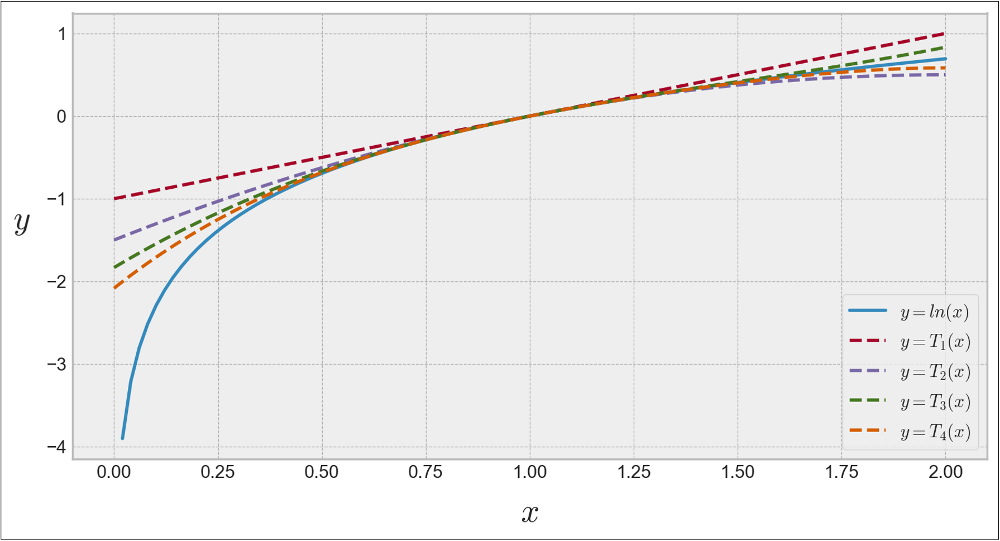
1.3 Derivadas parciales
Los conceptos revisados previamente nos han permitido construir el concepto de derivada para funciones del tipo \(f:U\longrightarrow V\), donde \(U\) y \(V\) son intervalos abiertos de \(\mathbb{R}\). A continuación, extenderemos la definición de derivada a funciones \(f\) para las cuales \(U\) y \(V\) pueden ser conjuntos de dimensión mayor a 1.
Las funciones del tipo \(f:U\longrightarrow V\) son llamadas campos escalares (o funciones reales de variable vectorial), cuando \(U\subseteq \mathbb{R}^{m}, V\subseteq \mathbb{R}\) y \(m\geq 2\), y campos vectoriales (o funciones vectoriales de variable vectorial), cuando \(U\subseteq \mathbb{R}^{m}, V\subseteq \mathbb{R}^{n}\) y \(m\geq 2, n\geq 2\). Las funciones reales de variable real, vistas previamente, disponen de una representación geométrica que se corresponde con su gráfica. Sin embargo, los campos escalares y vectoriales no siempre pueden representarse de esta manera.
En el caso de un campo escalar de \(n\) variables (es decir, del tipo \(f:U\subseteq \mathbb{R}^{n}\longrightarrow \mathbb{R}\)), su gráfica se define como el conjunto
\[ S=\left\{ \left( \mathbf{x} ,y\right) \in \mathbb{R}^{n+1} :\mathbf{x} =\left( x_{1},...,x_{n}\right) \in U\wedge y=f\left( \mathbf{x} \right) \right\} \tag{1.24} \]
De esta manera, si \(n=2\), la gráfica de una función \(f:U\subseteq \mathbb{R}^{3}\longrightarrow \mathbb{R}\) es el subconjunto del espacio \(\mathbb{R}^{3}\) definido como \(S=\left\{ \left( x,y,z\right) \in \mathbb{R}^{3} :\left( x,y\right) \in U\wedge z=f\left( x,y\right) \right\}\). Dicho subconjunto puede ser representado como una superficie en el espacio \(\mathbb{R}^{3}\), poniendo los puntos \((x,y)\in U\subset \mathbb{R}^{2}\) en el plano \(z=0\) y los valores de \(z=f(x,y)\) correspondientes en el eje \(Z\). Sin embargo, para \(n=3\), la gráfica de \(f\) ya no puede visualizarse, pues se encuentra, como mínimo, en \(\mathbb{R}^{4}\). Es por ello que los conceptos importantes relativos a campos escalares suelen ejemplificarse por medio de funciones con dominios en subconjuntos de \(\mathbb{R}^{2}\), pues en este caso disponemos de representaciones geométricas concretas de ellas, donde es posible “ver” el concepto estudiado.
Ejemplo 1.6 – Gráficas de campos escalares por medio de Matplotlib: Vamos a construir las gráficas de algunas funciones comunes con dominio en \(\mathbb{R}^{2}\), cuyas gráficas corresponden a superficies conocidas en análisis. Para ello, haremos uso de la librería de graficación Matplotlib, además por supuesto de Numpy para definir las funciones que deseamos graficar:
# Setting de algunos parámetros por defecto de nuestras imágenes.
plt.rcParams["figure.dpi"] = 90
sns.set_theme()
plt.style.use("seaborn-v0_8-white")Partiremos visualizando el gráfico del campo escalar \(f_{1}(x,y)=x^{2}+y^{2}\), el cual describe una superficie en \(\mathbb{R}^{3}\) conocida como paraboloide circular. Obtendremos su gráfica por medio de la construcción de una grilla de puntos que simularan los pares \((x,y)\), sobre los que aplicaremos la función \(f_{1}\):
# Una función sencilla, cuya gráfica es un paraboloide circular.
def f1(X, Y):
Z = X**2 + Y**2
return ZDe esta manera, definimos una grilla de puntos en un dominio específico a fin de obtener los valores de la función correspondiente. En este caso, asumiremos un dominio \((x,y)\in D\) tal que \(D\) es un cuadrado de lado 5 centrado en el origen del sistema \(\mathbb{R}^{2}\). De esta manera tenemos que:
# Definición del dominio por medio de una grilla.
x = np.linspace(start=-5, stop=5, num=100)
y = np.linspace(start=-5, stop=5, num=100)
X, Y = np.meshgrid(x,y)# Traza de la función f1.
Z = f1(X, Y)Luego, la gráfica de esta función puede trazarse fácilmente como sigue:
# Definimos una función graficadora.
def plot_surf(X, Y, Z, title):
fig = plt.figure(figsize=(12, 6))
ax = plt.axes(projection='3d')
ax.plot_surface(X, Y, Z, cmap='cool', edgecolor='k')
ax.set_title(title, fontsize=14, pad=-20)
ax.set_xlabel(r'$x$', fontsize=12, labelpad=10)
ax.set_ylabel(r'$y$', fontsize=12, labelpad=10)
ax.set_zlabel(r'$z$', fontsize=12, labelpad=10)
return fig, ax# Gráfico para el paraboloide elíptico.
fig, ax = plot_surf(
X, Y, Z, title=r'Gráfico de la función $f_{1}(x, y)=x^{2}+y^{2}$',
)
plt.tight_layout()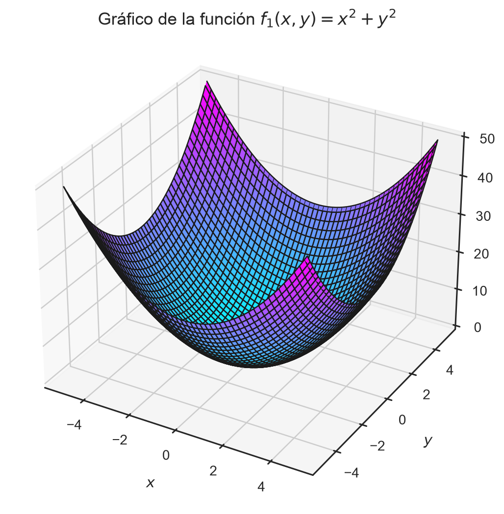
Con el blueprint anterior, no debiésemos tener problema en graficar cualquier tipo de superficie. Por ejemplo, consideremos la función \(f_{2}(x,y)=(D-By-Ax)/C\). La gráfica d \(f_{2}\) describe a un plano que corta a los ejes coordenados en los puntos \((-D/A, 0, 0)\), \((0, -D/B, 0)\) y \((0, 0, -D/C)\). Notemos que, al igual que el caso de \(f_{1}\) (el paraboloide circular), el dominio de \(f_{2}\) es todo \(\mathbb{R}^{2}\). Su gráfica se muestra a continuación para el caso particular de \(A=3, B=1, C=2\) y \(D=-1\):
# Una función sencilla, cuya gráfica es un plano.
def f2(X, Y, A, B, C, D):
Z = (D - B*Y - A*X) / C
return Z# Traza de la función f2.
Z = f2(X, Y, A=3, B=1, C=2, D=-1)
# Gráfico para el plano.
fig, ax = plot_surf(
X, Y, Z, title=r'Gráfico de la función $f_{2}(x, y)=(-1-y-3x)/2$',
)
plt.tight_layout()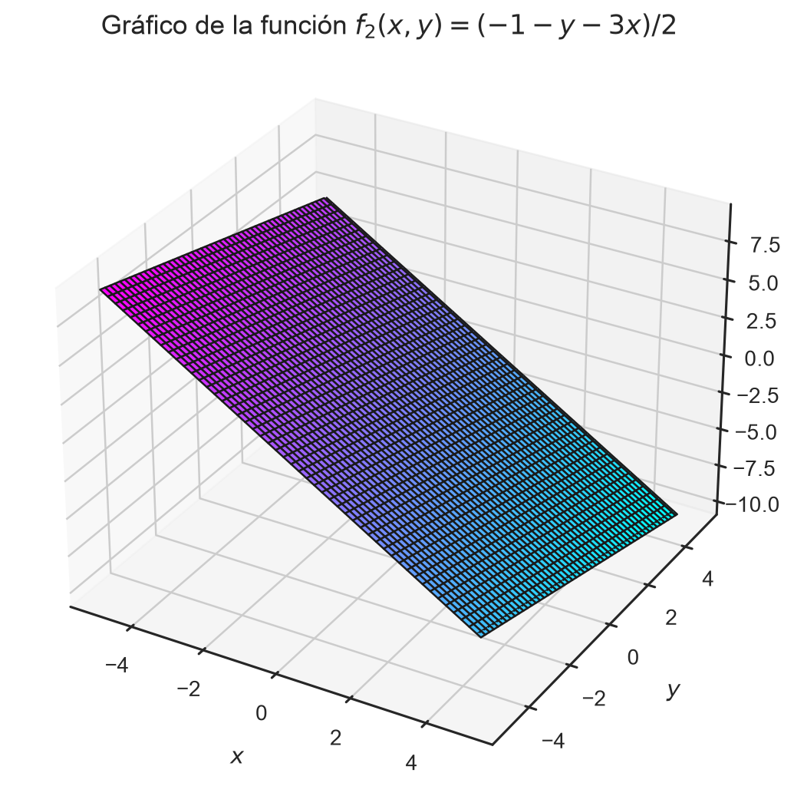
La gráfica de la función \(f_{3}:U\subset \mathbb{R}^{2}\longrightarrow \mathbb{R}\), para \(U=\left\{ \left( x,y\right) \in \mathbb{R}^{2} :\left( x,y\right) \neq \left( 0,0\right) \right\}\), definida como \(f_{3}(x,y)=\log(x^{2}+y^{2})\), describe una superficie con una discontinuidad en el origen, que se asemeja a una singularidad. Su gráfica se muestra a continuación:
# Función que describe a f3.
def f3(X, Y):
Z = np.log10(X**2 + Y**2)
return Z# Traza de la función f3.
Z = f3(X, Y)
# Gráfico para nuestra superficie.
fig, ax = plot_surf(
X, Y, Z, title=r'Gráfico de la función $f_{3}(x,y)=\log(x^{2}+y^{2})$'
)
plt.tight_layout()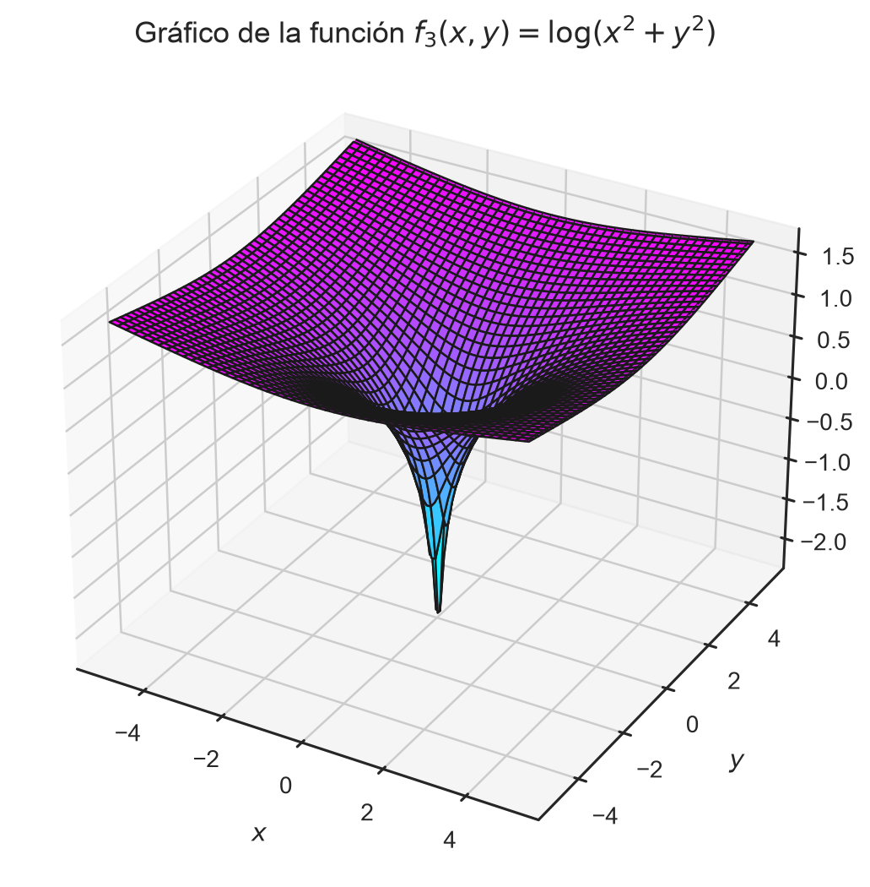
La gráfica de la función \(f_{4}:\mathbb{R}^{2}\longrightarrow \mathbb{R}\), definida como \(f_{4}(x,y)=\frac{x^{2}}{a^{2}}-\frac{y^{2}}{b^{2}}\), para \(a,b\neq 0\), describe una superficie conocida como paraboloide hiperbólico, y que tiene una forma característica de silla de montar. Esta superficie es famosa en matemáticas, debido a que presenta un caso singular de punto en el origen conocido como punto de ensilladura, donde el plano tangente a la superficie es paralelo al plano \((x,y)\). De esta manera, el punto de ensilladura es el más elevado que permite conectar los dos dominios altos adyacentes y es también el paso más bajo que comunica los dos dominios adyacentes que quedan por debajo. Su gráfica se observa a continuación, para el caso particular en que \(a=\sqrt{5}\) y \(b=\sqrt{2}\):
# Función que describe a f4.
def f4(X, Y, a, b):
Z = (X**2 / a**2) - (Y**2 / b**2)
return Z# Traza de la función f4.
Z = f4(X, Y, a=np.sqrt(5), b=np.sqrt(2))
# Gráfico para el paraboloide hiperbólico.
fig, ax = plot_surf(
X, Y, Z, title=r'Gráfico de la función $f_{4}(x,y)=\frac{x^{2}}{5}-\frac{y^{2}}{2}$'
)
plt.tight_layout()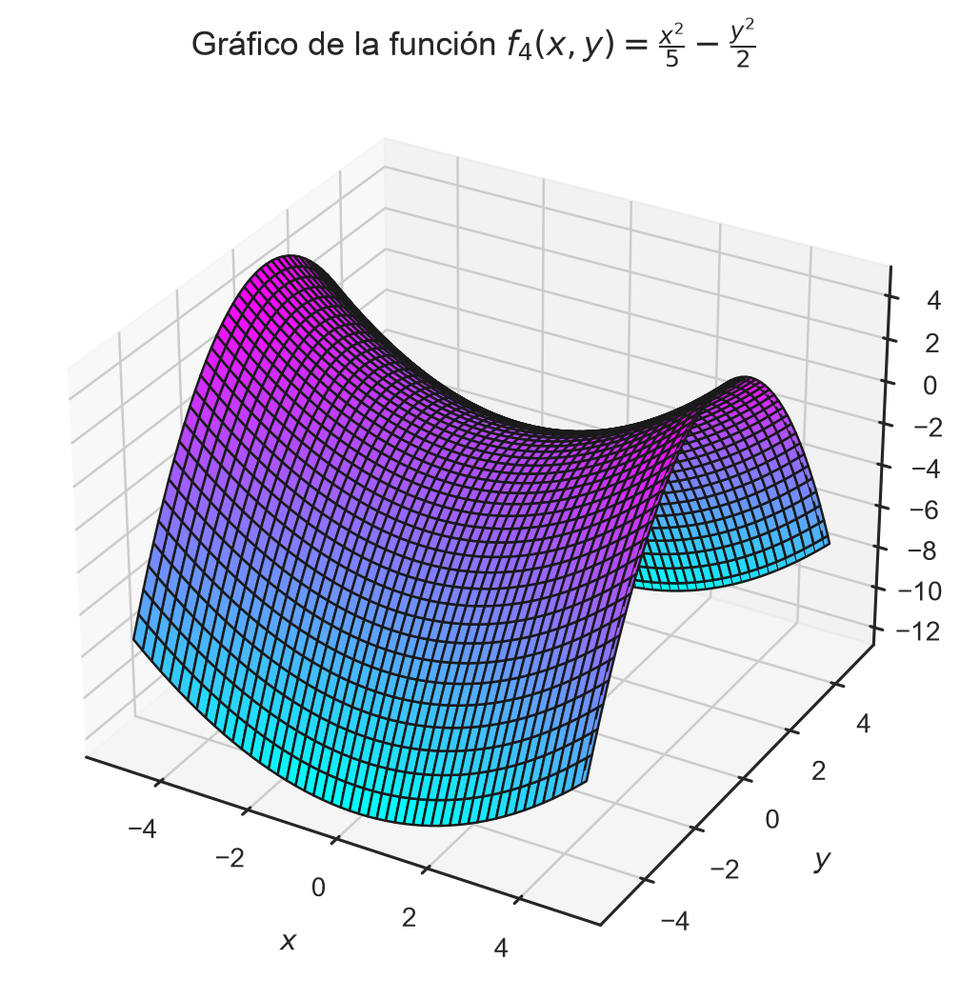
La expresión \(x^{2}+y^{2}+z^{2}=r^{2}\) no representa (globalmente) una función \(f:U\subseteq \mathbb{R}^{2}\longrightarrow \mathbb{R}\), pues al tratar de escribir \(f(x,y)\) nos queda \(z=\pm \sqrt{r^{2}-x^{2}-y^{2}}\), que no representa una función, ya que las imágenes respectivas sobre un punto \((x,y)\in U\) deben ser únicas (puesto que ésto se exige en la definición matemática de función). No obstante, las expresiones \(g(x,y)=\sqrt{r^{2}-x^{2}-y^{2}}\) y \(h(x,y)=-\sqrt{r^{2}-x^{2}-y^{2}}\) sí representan funciones del tipo \(g,h:U\subseteq \mathbb{R}^{2}\longrightarrow \mathbb{R}\), donde \(U=\left\{ \left( x,y\right) \in \mathbb{R}^{2} :x^{2}+y^{2}\leq r^{2}\right\}\), y cuyos gráficos representan a las mitades superior e inferior, respectivamente, de una esfera centrada en el origen del espacio \(\mathbb{R}^{3}\) y de radio \(r\).
Naturalmente, en Matplotlib no resulta sencillo graficar la esfera completa haciendo uso de las representaciones explícitas de las mitades superior e inferior. Sin embargo, sí es posible obtener una representación paramétrica de la esfera completa haciendo uso de una transformación de coordenadas, tal que un punto arbitrario \((x,y,z)\in \mathbb{R}^{3}\) se exprese en el sistema \((r,\theta,\phi)\in \mathbb{R}^{3}\) como
\[ \begin{array}{lll}x&=&r\cos \left( \phi \right) \ \mathrm{sen} \left( \theta \right) \\ y&=&r\ \mathrm{sen} \left( \phi \right) \mathrm{sen} \left( \theta \right) \\ z&=&r\cos \left( \theta \right) \end{array} \tag{1.25} \]
El dominio de esta trasformación es el conjunto \(V=\left\{ \left( r,\theta ,\phi \right) \in \mathbb{R}^{3} :r>0,0<\theta <\pi ,0\leq \phi <2\pi \right\}\). La parametrización anterior se conoce como representación en coordenadas polares del punto \((x,y,z)\in \mathbb{R}^{3}\). Bajo dicha representación, resulta sencillo obtener un gráfico de la esfera completa en Matplotlib. Por ejemplo, para el caso de una esfera de radio \(r=5\), tenemos:
# Una función que nos permite construir la representación de una esfera.
def sphere(r):
# Definimos los límites de la grilla para el sistema esférico de coordenadas.
# u hace el papel de phi, v el papel de theta
u = np.linspace(start=0, stop=2*np.pi, num=100)
v = np.linspace(start=0, stop=np.pi, num=100)
U, V = np.meshgrid(u, v)
# Trasformación de coordenadas.
X = r * np.cos(U) * np.sin(V)
Y = r * np.sin(U) * np.sin(V)
Z = r * np.cos(V)
return X, Y, Z# Construimos nuestra esfera de radio 5.
X, Y, Z = sphere(r=5)
# Gráfico para nuestra superficie.
fig, ax = plot_surf(X, Y, Z, title=r'Gráfico de la esfera $x^{2}+y^{2}+z^{2}=25$')
plt.tight_layout()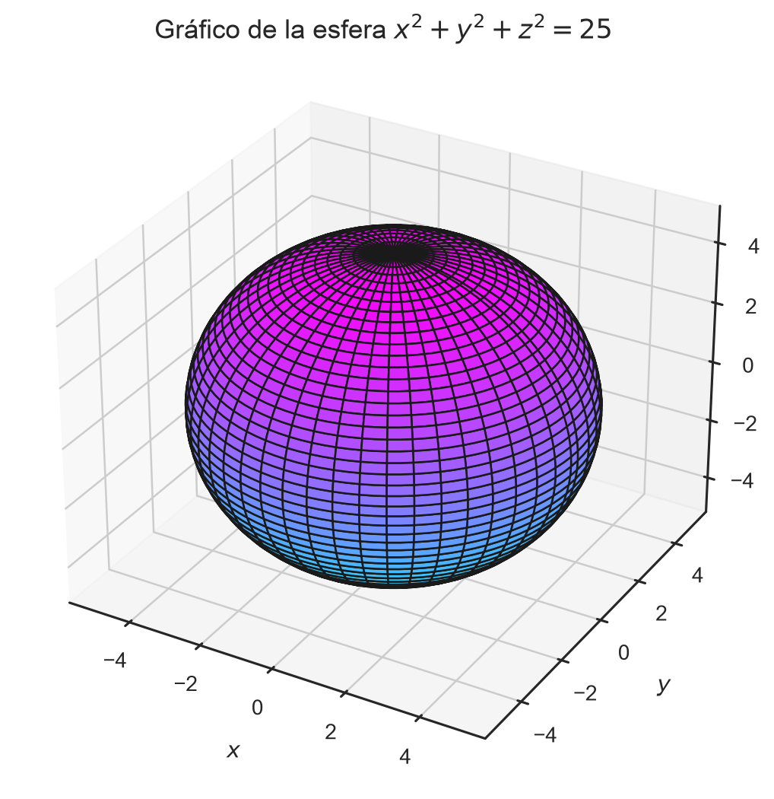
◼
Los campos vectoriales, por otro lado, suelen representarse como líneas de flujo (que, por ejemplo, pueden ser representativas del campo de velocidades de un fluido incompresible), siempre que las imágenes respectivas se reúnan en un conjunto de dimensión \(n=2\) o \(n=3\).
Ejemplo 1.7 – Gráficas de campos vectoriales por medio de Matplotlib: El campo vectorial \(\mathbf{f} :U\subset \mathbb{R}^{2} \longrightarrow \mathbb{R}^{2}\), cuyo dominio es \(U=\left\{ \left( x,y\right) \in \mathbb{R}^{2} :x\neq 0\wedge y\neq 0\right\}\), y definido explícitamente como
\[ \mathbf{f} \left( x,y\right) =\left( \frac{y}{\ln \left( x^{2}+y^{2}\right) } ,\frac{x}{\ln \left( x^{2}+y^{2}\right) } \right) \tag{1.26} \]
representa un campo de velocidades de un fluido tal que el movimiento de las partículas que componen dicho fluido tiende a coincidir con la dirección de la recta \(y=x\) para \(x>0\) e \(y>0\), y con la dirección de la recta \(y=-x\) para \(x<0\) e \(y<0\). En el entorno cercano al origen, se genera una divergencia completa del flujo. Esto podemos visualizarlo en Matplotlib haciendo uso de la función plt.quiver(), mediante una lógica similar a la utilizada para el gráfico de superficies:
# Una función que nos permite graficar campos vectoriales con recorrido en un espacio en 2D.
def plot_vector_field(X, Y, U, V, title, color):
fig, ax = plt.subplots(figsize=(8, 7))
ax.quiver(X, Y, U, V, color=color)
ax.set_title(title, fontsize=15, pad=15)
ax.set_xlabel(r'$x$', fontsize=14, labelpad=10)
ax.set_ylabel(r'$y$', fontsize=14, labelpad=10, rotation=0)
return fig, ax;# Construimos nuestro campo vectorial.
x = np.linspace(start=-5, stop=5, num=20)
y = np.linspace(start=-5, stop=5, num=20)
X, Y = np.meshgrid(x, y) # Grilla que define su dominio.
U, V = Y/np.log(X**2 + Y**2), X/np.log(X**2 + Y**2)
# Gráfico de nuestro campo vectorial.
plot_vector_field(
X, Y, U, V, color="turquoise",
title=r"Campo vectorial ${\mathbf{f} \left( x,y\right) =\left( \frac{y}{\ln \left( x^{2}+y^{2}\right) } ,\frac{x}{\ln \left( x^{2}+y^{2}\right) } \right)}$"
)
plt.tight_layout()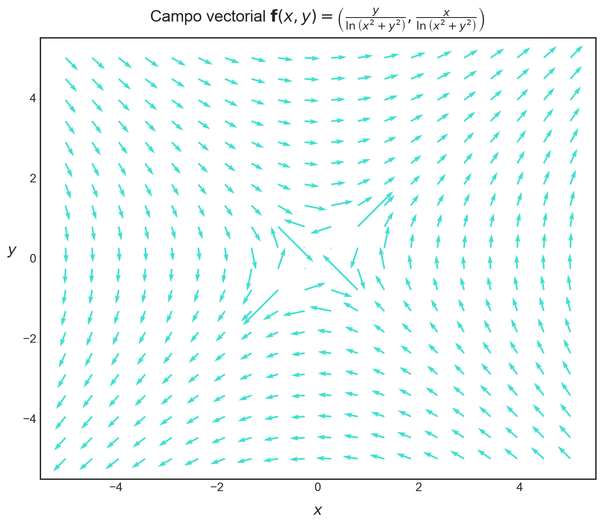
Vemos pues que todas las líneas de flujo divergen en el origen. Por esa razón, se dice que el origen representa un sumidero en este campo de flujo.
El campo vectorial \(\mathbf{f}(x,y)=\left(\mathrm{sen} \left( x^{2}+y^{2}\right),-\cos \left( x^{2}+y^{2}\right) \right)\) es un típico ejemplo de un campo de velocidades de un fluido incompresible después de sufrir una perturbación que genera ondas elípticas en todas direcciones, como una piedra que choca contra un charco de agua. A continuación, mostramos los gráficos para los cuales el campo de velocidades se grafica en una grilla de baja densidad, a fin de dar claridad respecto de las direcciones del flujo, y en otra grilla de mayor densidad, a fin de visibilizar las ondas resultantes del campo completo:
# Construimos nuestros campos vectoriales.
x1 = np.linspace(start=-5, stop=5, num=20)
y1 = np.linspace(start=-5, stop=5, num=20)
x2 = np.linspace(start=-5, stop=5, num=100)
y2 = np.linspace(start=-5, stop=5, num=100)
X1, Y1 = np.meshgrid(x1, y1)
X2, Y2 = np.meshgrid(x2, y2)
U1, V1 = np.sin(X1**2 + Y1**2), np.cos(X1**2 + Y1**2)
U2, V2 = np.sin(X2**2 + Y2**2), np.cos(X2**2 + Y2**2)
# Gráficos de nuestros campos vectoriales.
title1 = "Campo vectorial " +\
r"$\mathbf{f}(x,y)=\left(\mathrm{sen} \left( x^{2}+y^{2}\right),-\cos \left( x^{2}+y^{2}\right) \right)$ " +\
"\nGrilla de baja densidad"
title2 = "Campo vectorial " +\
r"$\mathbf{f}(x,y)=\left(\mathrm{sen} \left( x^{2}+y^{2}\right),-\cos \left( x^{2}+y^{2}\right) \right)$ " +\
"\nGrilla de alta densidad"
plot_vector_field(
X1, Y1, U1, V1, color="navy",
title=title1
)
plt.tight_layout()
plot_vector_field(
X2, Y2, U2, V2, color="navy",
title=title2
)
plt.tight_layout()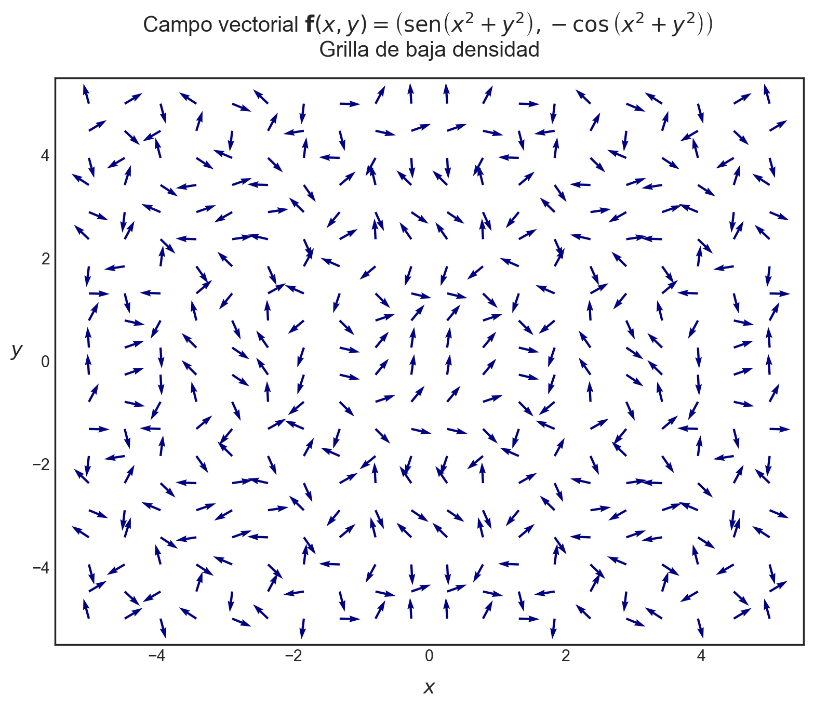
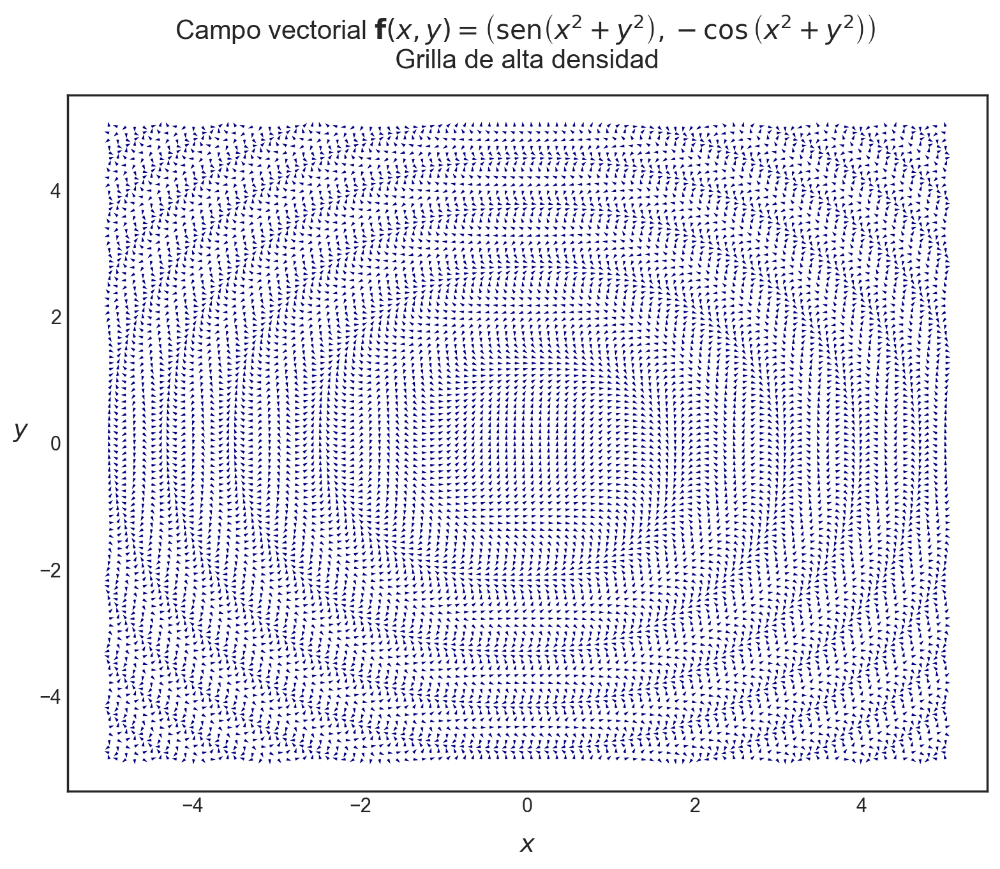
◼
Procederemos ahora a dar nuestro primer gran paso en la extensión del concepto de derivada, en primer lugar, para funciones reales de variable vectorial. Comencemos por extender dicha idea a una función de dos variables del tipo \(f:U\subseteq \mathbb{R}^{2}\longrightarrow \mathbb{R}\), definida en un conjunto abierto \(U\) de \(\mathbb{R}^{2}\). Sea \(\mathbf{p}=(x_{0},y_{0})\) un punto de \(U\). Se define entonces la derivada parcial de \(f\) con respecto a la variable \(x\) (la primera variable de \(f\)) en \(\mathbf{p}\), denotada como \(\frac{\partial f}{\partial x}(\mathbf{p})\), como el límite
\[ \frac{\partial f}{\partial x} \left( \mathbf{p} \right) =\lim_{h\rightarrow 0} \frac{f\left( x_{0}+h,y_{0}\right) -f\left( x_{0},y_{0}\right) }{h} \tag{1.27} \]
cuando tal límite existe. Del mismo modo, la derivada parcial de \(f\) con respecto a \(y\) (la segunda variable de \(f\)) en \(\mathbf{p}\), denotada como \(\frac{\partial f}{\partial y}(\mathbf{p})\), se define como el límite, si existe
\[ \frac{\partial f}{\partial y} \left( \mathbf{p} \right) =\lim_{h\rightarrow 0} \frac{f\left( x_{0},y_{0}+h\right) -f\left( x_{0},y_{0}\right) }{h} x\tag{1.28} \]
Es posible observar que las definiciones para las derivadas parciales entregadas en las ecuaciones anteriores contienen todos los “ingredientes” de la definición de derivada para funciones de una sola variable (vista en la definición (1.2)), con el detalle que se mide la variación de “sólo una” de las variables que componen \(f\), dejando la otra fija y tratándola como si fuera una constante. De este modo, si consideramos la función \(\phi(x)=f(x,y_{0})\) que se obtiene al fijar en la función \(f\) la variable \(y\) en \(y_{0}\), sabemos que la derivada de \(\phi\) en \(x=x_{0}\) es
\[ \begin{array}{lll}\phi^{\prime } \left( x_{0}\right) &=&\displaystyle \lim_{h\rightarrow 0} \displaystyle \frac{\phi \left( x_{0}+h\right) -\phi \left( x_{0}\right) }{h} \\ &=&\displaystyle \lim_{h\rightarrow 0} \displaystyle \frac{f\left( x_{0}+h,y_{0}\right) -f\left( x_{0},y_{0}\right) }{h} \\ &=&\displaystyle \frac{\partial f}{\partial x} \left( \mathbf{p} \right) \end{array} \tag{1.29} \]
Similarmente, si \(\psi(y)=f(x_{0},y)\), tenemos que
\[ \begin{array}{lll}\psi^{\prime } \left( x_{0}\right) &=&\displaystyle \lim_{h\rightarrow 0} \displaystyle \frac{\psi \left( y_{0}+h\right) -\psi \left( x_{0}\right) }{h} \\ &=&\displaystyle \lim_{h\rightarrow 0} \displaystyle \frac{f\left( x_{0},y_{0}+h\right) -f\left( x_{0},y_{0}\right) }{h} \\ &=&\displaystyle \frac{\partial f}{\partial y} \left( \mathbf{p} \right) \end{array} \tag{1.30} \]
Observemos que, desde el punto de vista geométrico, la función \(\phi(x)=f(x,y_{0})\) representa la curva que se obtiene de intersectar la superficie \(z=f(x,y)\) con el plano \(y=y_{0}\). Dicha curva, en el punto \(x=x_{0}\), tiene una recta tangente cuya pendiente es precisamente la derivada parcial \(\phi^{\prime } \left( x_{0}\right) =\frac{\partial f}{\partial x} \left( \mathbf{p} \right)\). De manera análoga, la función \(\psi(y)=f(x_{0},y)\) representa la curva obtenida de la intersecció de la superficie \(z=f(x,y)\) con el plano \(x=x_{0}\), cuya pendiente en el punto \(y=y_{0}\) es \(\psi^{\prime } \left( y_{0}\right) =\frac{\partial f}{\partial y} \left( \mathbf{p} \right)\). Esta situación se esquematiza en la Figura 1.4.
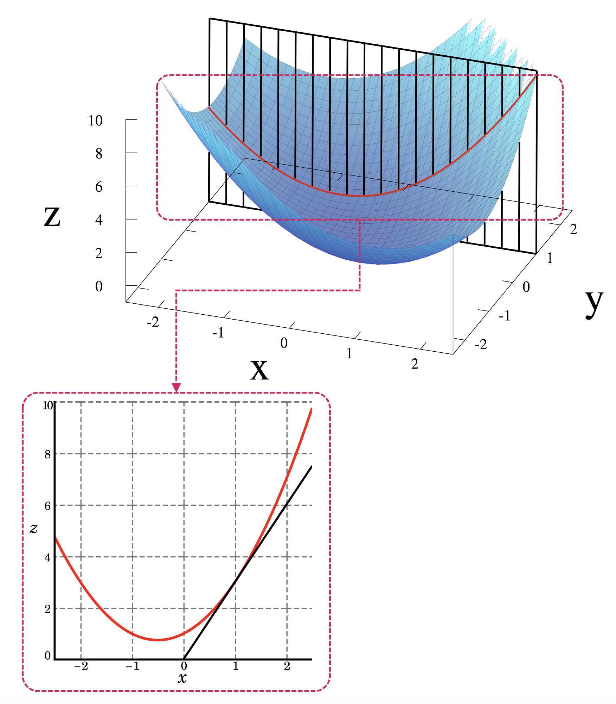
Al considerar el caso general de funciones vectoriales de \(n\) variables del tipo \(f:U\subseteq \mathbb{R}^{n}\longrightarrow \mathbb{R}\), es conveniente expresar las derivadas parciales en forma vectorial o matricial, aprovechando lo aprendido en las secciones anteriores dedicadas al álgebra lineal, considerando la base canónica del espacio \(\mathbb{R}^{n}\). Tiene sentido entonces la siguiente definición.
Definición 1.7 – Derivada parcial: Para una función del tipo \(f:U\subseteq \mathbb{R}^{n}\longrightarrow \mathbb{R}\) tal que \(\mathbf{x} \longmapsto f\left( \mathbf{x} \right)\), donde \(\mathbf{x}=(x_{1},...,x_{n})^{\top}\), definimos las derivadas parciales de \(f\) como
\[ \begin{array}{lll}\displaystyle \frac{\partial f}{\partial x_{1}} &=&\displaystyle \lim_{h\rightarrow 0} \displaystyle \frac{f\left( x_{1}+h,x_{2},...,x_{n}\right) -f\left( x_{1},x_{2},...,x_{n}\right) }{h} \\ \displaystyle \frac{\partial f}{\partial x_{2}} &=&\displaystyle \lim_{h\rightarrow 0} \displaystyle \frac{f\left( x_{1},x_{2}+h,...,x_{n}\right) -f\left( x_{1},x_{2},...,x_{n}\right) }{h} \\ &\vdots &\\ \displaystyle \frac{\partial f}{\partial x_{n}} &=&\displaystyle \lim_{h\rightarrow 0} \displaystyle \frac{f\left( x_{1},x_{2},...,x_{n}+h\right) -f\left( x_{1},x_{2},...,x_{n}\right) }{h} \end{array} \tag{1.31} \]
◼︎
Ejemplo 1.8: Calcularemos las derivadas parciales de la función \(f\) definida como
\[ f\left( x,y\right) =\frac{\tan \left( x^{2}-y^{2}\right) }{3xy} +\frac{1}{2} \arctan \left( \sqrt{xy} \right) \tag{1.32} \]
Notemos que, para obtener las derivadas parciales respectivas, debemos aplicar la regla de la cadena (teorema (1.2)) respecto de ambas variables. De esta manera, tenemos que
\[ \begin{array}{lll}\displaystyle \frac{\partial f}{\partial x} \left( x,y\right) &=&\displaystyle \frac{1}{3} \frac{\partial }{\partial x} \left( \displaystyle \frac{\tan \left( x^{2}-y^{2}\right) }{xy} \right) +\displaystyle \frac{1}{2} \displaystyle \frac{\partial }{\partial x} \left( \arctan \left( \sqrt{xy} \right) \right) \\ &=&\displaystyle \frac{1}{3} \left( \displaystyle \frac{y-2x\left( \sec^{2} \left( x^{2}-y^{2}\right) \right) }{x^{2}y^{2}} \right) +\displaystyle \frac{y}{4} \left( \displaystyle \frac{1}{\left( 1+xy\right) \sqrt{xy} } \right) \end{array} \tag{1.33} \]
Calculamos ahora la derivada parcial de \(f\) con respecto a \(y\), lo que nos da
\[ \begin{array}{lll}\displaystyle \frac{\partial f}{\partial y} \left( x,y\right) &=&\displaystyle \frac{1}{3} \displaystyle \frac{\partial }{\partial y} \left( \displaystyle \frac{\tan \left( x^{2}-y^{2}\right) }{xy} \right) +\frac{1}{2} \displaystyle \frac{\partial }{\partial y} \left( \arctan \left( \sqrt{xy} \right) \right) \\ &=&\displaystyle \frac{1}{3} \left( \displaystyle \frac{y-2y\left( \sec^{2} \left( x^{2}-y^{2}\right) \right) }{x^{2}y^{2}} \right) +\displaystyle \frac{x}{4} \left( \displaystyle \frac{1}{\left( 1+xy\right) \sqrt{xy} } \right) \end{array} \tag{1.34} \]
◼
Consideremos la función \(f:U\subseteq \mathbb{R}^{2}\longrightarrow \mathbb{R}\) definida en el conjunto abierto \(U\) de \(\mathbb{R}^{2}\). Si esta función tiene derivadas parciales en cualquier punto \((x,y)\in U\) (es decir, \(f\) es diferenciable en todo \(U\)), entonces podemos considerar las funciones \(\frac{\partial f}{\partial x} :U\subseteq \mathbb{R}^{2} \longrightarrow \mathbb{R}\) y \(\frac{\partial f}{\partial y} :U\subseteq \mathbb{R}^{2} \longrightarrow \mathbb{R}\). Puede ocurrir que estas funciones también sean diferenciables en el conjunto abierto \(U\), lo que nos motiva a considerar las nuevas derivadas parciales
\[ \frac{\partial }{\partial x} \left( \frac{\partial f}{\partial x} \right) \ ;\ \frac{\partial }{\partial y} \left( \frac{\partial f}{\partial x} \right) \ ;\ \frac{\partial }{\partial x} \left( \frac{\partial f}{\partial y} \right) \ ;\ \frac{\partial }{\partial y} \left( \frac{\partial f}{\partial y} \right) \tag{1.35} \]
para todo \((x,y)\in U\). Diremos, en este caso, que éstas son las derivadas parciales de segundo orden de la función \(f\), y las denotaremos como
\[ \begin{array}{rcl}\displaystyle \frac{\partial^{2} f}{\partial x^{2}} =\displaystyle \frac{\partial }{\partial x} \left( \displaystyle \frac{\partial f}{\partial x} \right) &;&\displaystyle \frac{\partial^{2} f}{\partial y^{2}} =\displaystyle \frac{\partial }{\partial y} \left( \displaystyle \frac{\partial f}{\partial y} \right) \\ \displaystyle \frac{\partial^{2} f}{\partial x\partial y} =\displaystyle \frac{\partial }{\partial x} \left( \displaystyle \frac{\partial f}{\partial y} \right) &;&\displaystyle \frac{\partial^{2} f}{\partial y\partial x} =\displaystyle \frac{\partial }{\partial y} \left( \displaystyle \frac{\partial f}{\partial x} \right) \end{array} \tag{1.36} \]
Por supuesto, si consideramos ahora a las derivadas de segundo orden como funciones definidas en el conjunto abierto \(U\) de \(\mathbb{R}^{2}\), también podríamos calcular ”sus” derivadas parciales y extender este proceso indefinidamente.
Las derivadas parciales de la última línea en la expresión (1.36) son llamadas derivadas parciales mixtas o cruzadas. Bajo condiciones bien generales, estas derivadas tienen valores equivalentes, lo que estableceremos un poco más adelante. Antes de eso, dejaremos expresada la siguiente definición.
Definición 1.8 – Derivadas parciales de orden superior: Sea \(f:U\subseteq \mathbb{R}^{n}\longrightarrow \mathbb{R}\) una función definida en un conjunto abierto \(U\) de \(\mathbb{R}^{n}\). Para todo \(\mathbf{x}\in \mathbb{R}^{n}\), asumimos que existen las derivadas parciales \(\frac{\partial f}{\partial x_{1}} ,...,\frac{\partial f}{\partial x_{n}}\) y que éstas son continuas también en algún conjunto abierto de \(\mathbb{R}^{n}\). Definimos las derivadas parciales de segundo orden mediante el término general
\[ \frac{\partial^{2} f}{\partial x_{i}\partial x_{j}} \left( \mathbf{x} \right) =\frac{\partial }{\partial x_{i}} \left( \frac{\partial f}{\partial x_{j}} \left( \mathbf{x} \right) \right) \tag{1.37} \]
Cuando el resultado final de una derivación parcial sólo dependa del número de veces que se deriva respecto de cada variable de \(f\) y no del orden en que se realiza tal proceso (como veremos, esto no sucederá siempre), denotaremos, mediante la expresión
\[ \frac{\partial^{r} f}{\partial x^{j_{1}}_{1}\partial x^{j_{2}}_{2}\cdots \partial x^{j_{n}}_{n}} \left( \mathbf{x} \right) \tag{1.38} \]
al resultado de efectuar \(r\) derivaciones parciales; \(j_{n}\) con respecto a \(x_{n}\), \(j_{n-1}\) con respecto a \(x_{n-1}\), etc., y por último, \(j_{1}\) derivaciones con respecto a \(x_{1}\). Por lo tanto, \(j_{1}+j_{2}+\cdots +j_{n}=r\). Algunos de los \(j_{k}\) pueden ser iguales a cero, en cuyo caso no se realiza derivación alguna respecto de la variable \(x_{k}\) (y, por tanto, se omite el término \(\partial x_{k}^{jk}\) en la expresión anterior.
TipTeorema 1.3 – Teorema de Schwarz
Sea \(f:U\subseteq \mathbb{R}^{2}\longrightarrow \mathbb{R}\) una función definida en el conjunto abierto \(U\) de \(\mathbb{R}^{n}\). Si las derivadas parciales mixtas de segundo orden \(\frac{\partial^{2} f}{\partial x\partial y}\) y \(\frac{\partial^{2} f}{\partial y\partial x}\) existen y son continuas en todo punto \((x,y)\) de \(U\) (es decir, \(f\) es de clase \(C^{2}\) en \(U\)), entonces se cumple que
\[ \frac{\partial^{2} f}{\partial x\partial y} \left( x,y\right) =\frac{\partial^{2} f}{\partial y\partial x} \left( x,y\right) \tag{1.39} \]
De forma más general, si \(f:U\subseteq \mathbb{R}^{n}\longrightarrow \mathbb{R}\) es una función definida y de clase \(C^{2}\) en \(U\), entonces se tiene que, para todo punto \(\mathbf{x}\) de \(U\)
\[ \frac{\partial^{2} f}{\partial x_{i}\partial x_{j}} \left( \mathbf{x} \right) =\frac{\partial^{2} f}{\partial x_{j}\partial x_{i}} \left( \mathbf{x} \right) \tag{1.40} \]
Ejemplo 1.9: Consideremos la función \(z=\mathrm{sen}(1+x^{2}y^{2})\). Comprobaremos que \(z\) es una función que satisface el teorema (1.3) y graficaremos la superficie resultante de la misma en el conjunto \(S=\left\{ \left( x,y\right) \in \mathbb{R}^{2} :-2\leq x\leq 2;-2\leq y\leq 2\right\}\). En efecto,
\[ \frac{\partial z}{\partial x} =2xy^{2}\cos \left( 1+x^{2}y^{2}\right) \ \wedge \ \frac{\partial z}{\partial y} =2x^{2}y\cos \left( 1+x^{2}y^{2}\right) \tag{1.41} \]
Luego,
\[ \begin{array}{lll}\displaystyle \frac {\partial^{2} z}{\partial x\partial y} &=&2x\left[ 2y\cos \left( 1+x^{2}y^{2}\right) -2x^{2}y^{3}\ \mathrm{sen} \left( 1+x^{2}y^{2}\right) \right] \\ \displaystyle \frac{\partial^{2} z}{\partial y\partial x} &=&2y\left[ 2x\cos \left( 1+x^{2}y^{2}\right) -2x^{3}y^{2\ }\mathrm{sen} \left( 1+x^{2}y^{2}\right) \right] \end{array} \tag{1.42} \]
Verificamos entonces que, como ambas derivadas parciales mixtas de segundo orden son iguales, entonces \(z\) satisface el teorema (1.3). Esto es, naturalmente, un resultado esperable, ya que \(z\) es la composición de funciones de clase \(C^{2}\) en todo \(\mathbb{R}^{2}\).
Podemos apoyarnos igualmente de Matplotlib y de las funciones creadas en ejemplos anteriores para graficar la superficie en el dominio solicitado. De esta forma, tenemos que:
# Definimos los límites del dominio sobre el cual graficaremos la superficie.
x = np.linspace(start=-2, stop=2, num=100)
y = np.linspace(start=-2, stop=2, num=100)
# Construimos la grilla completa.
X, Y = np.meshgrid(x, y)# Definimos la función a graficar.
def f(X, Y):
return np.sin(1 + X**2 * Y**2)# Y finalmente graficamos la superficie en cuestión.
title = \
r"Gráfico de la función $z=\mathrm{sen}(1+x^{2}y^{2})$" +\
"\n" +\
r"$S=\left\{ \left( x,y\right) \in \mathbb{R}^{2} :-2\leq x\leq 2;-2\leq y\leq 2\right\}$"
plot_surf(X, Y, f(X, Y), title=title)
plt.tight_layout()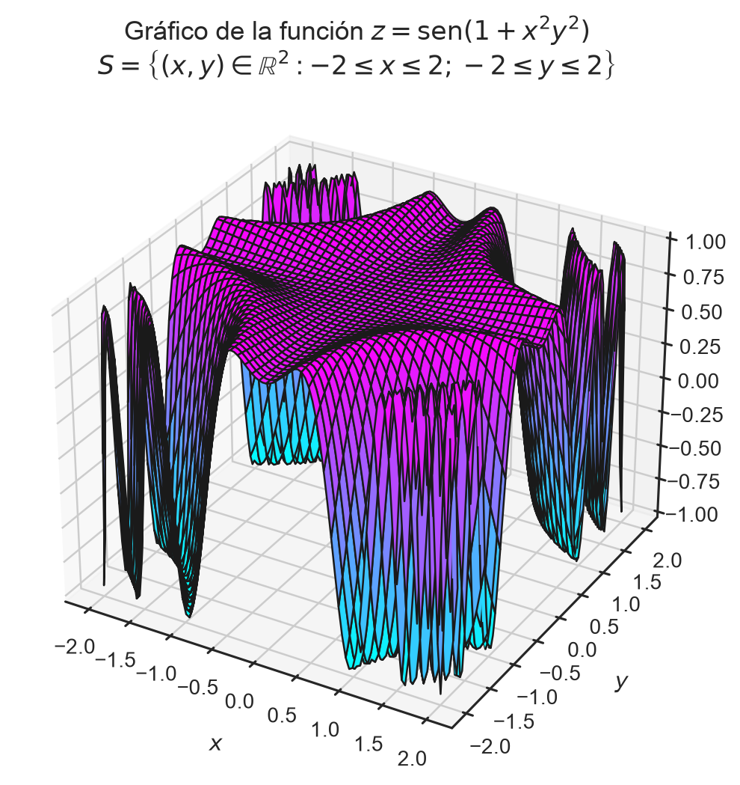
◼︎
1.4 Campo gradiente
1.4.1 Gradiente de un campo escalar
Hasta ahora hemos estudiado la diferenciación de funciones del tipo \(f:U\longrightarrow V\), donde \(U\) es un conjunto abierto en \(\mathbb{R}^{n}\) y \(V\) es un intervalo abierto en \(\mathbb{R}\), en términos de la existencia de ciertos objetos matemáticos llamados derivadas parciales, y que corresponden a casos muy particulares de un concepto más general, conocido como campo gradiente y que veremos a continuación.
Sin embargo, aun nos falta abordar lo que ocurre con los llamados campos vectoriales. Es decir, funciones del tipo \(\mathbf{f} :U\subseteq \mathbb{R}^{m} \longrightarrow V\subseteq \mathbb{R}^{n}\). Ya vimos ejemplos de estas funciones, pero no definimos derivadas de ningún tipo para ellas. Para ello, formalizaremos el concepto de campo vectorial.
Definición 1.9 – Campo vectorial: Una función del tipo \(\mathbf{f} :U\subseteq \mathbb{R}^{m} \longrightarrow V\subseteq \mathbb{R}^{n}\) es llamada campo vectorial de \(n\) dimensiones (o función vectorial de variable vectorial). Asocia a cada punto \(\mathbf{x}=(x_{1},...,x_{m})\in U\subseteq \mathbb{R}^{m}\) un vector \(\mathbf{f}(\mathbf{x})\in \mathbb{R}^{n}\), de modo que podemos escribir la imagen \(\mathbf{f}(\mathbf{x})\) de punto \(\mathbf{x}\) como \(\mathbf{f} (\mathbf{x} )=\left( f_{1}(\mathbf{x} ),...,f_{n}(\mathbf{x} )\right) \in \mathbb{R}^{n}\), donde las funciones \(f_{j}:U\subseteq \mathbb{R}^{m} \longrightarrow \mathbb{R}\), para \(1\leq j\leq m\), son campos escalares llamados funciones coordenadas de \(\mathbf{f}\).
Para cada una de las funciones coordenadas de un campo vectorial, es posible definir sus derivadas parciales, de manera que las derivadas parciales de un campo vectorial \(\mathbf{f} :U\subseteq \mathbb{R}^{m} \longrightarrow V\subseteq \mathbb{R}^{n}\) pueden expresarse unívocamente, para cualquier punto \(\mathbf{x}\in U\), como las derivadas parciales de las \(n\) funciones coordenadas \(f_{j} (j=1,...,n)\) con respecto a las \(m\) variables \(x_{i} (i=1,...,m)\). Estas derivadas parciales suelen denotarse como
\[ \frac{\partial f_{j}}{\partial x_{i}} \left( \mathbf{x} \right) \tag{1.43} \]
Ya estamos en condiciones de generalizar el concepto de derivada tanto para campos escalares como para campos vectoriales. Partiremos entonces con los primeros definiendo uno de los conceptos más importantes en matemáticas.
Definición 1.10 – Gradiente (de un campo escalar): Sea \(f:U\subseteq \mathbb{R}^{n}\longrightarrow \mathbb{R}\) una función de clase \(C^{1}\) en el conjunto abierto \(U\) de \(\mathbb{R}^{n}\). Definimos el gradiente de \(f\) en \(\mathbf{x}\in U\) como el vector \(\nabla_{\mathbf{x}}f\in \mathbb{R}^{1\times n}\) (también denotado como \(\mathrm{grad}(f(\mathbf{x}))\), cuyos elementos son las derivadas parciales de \(f\). Es decir,
\[ \nabla_{\mathbf{x} } f=\frac{df\left( \mathbf{x} \right) }{d\mathbf{x} } :=\left( \frac{\partial f}{\partial x_{1}} \left( \mathbf{x} \right) ,\frac{\partial f}{\partial x_{2}} \left( \mathbf{x} \right) ,...,\frac{\partial f}{\partial x_{n}} \left( \mathbf{x} \right) \right) \in \mathbb{R}^{1\times n} \tag{1.44} \]
Ejemplo 1.10: Vamos a determinar el gradiente de la función
\[ f\left( x,y,z\right) =x^{4}+\exp \left( y^{3}+e^{2}\arctan \left( z\right) \right) +z^{2\pi } \tag{1.45} \]
En efecto, calculamos primero las derivadas parciales de \(f\). Luego tenemos,
\[ \frac{\partial f}{\partial x} =4x^{3}\ \wedge \ \frac{\partial f}{\partial y} =3y^{2}\exp \left( y^{3}+e^{2}\arctan \left( z\right) \right) \ \wedge \ \frac{\partial f}{\partial z} =2\pi z^{2\pi -1} \tag{1.46} \]
Por lo tanto, el gradiente de \(f\) se calcula como
\[ \nabla_{\left( x,y,z\right) } f=\left( \frac{\partial f}{\partial x} ,\frac{\partial f}{\partial y} ,\frac{\partial f}{\partial z} \right) =\left( 4x^{3},3y^{2}\exp \left( y^{3}+e^{2}\arctan \left( z\right) \right) ,2\pi z^{2\pi -1}\right) \tag{1.47} \]
◼︎
Ejemplo 1.11: Volvamos a considerar la función \(f(x,y)=\mathrm{sen}(1+x^{2}y^{2})\) que ya habíamos abordado en el ejemplo (1.9). En este caso, el campo gradiente es el siguiente
\[ \nabla_{\left( x,y\right) } f=\left( \frac{\partial f}{\partial x} ,\frac{\partial f}{\partial y} \right) =\left( 2xy^{2}\cos \left( 1+x^{2}y^{2}\right) ,2x^{2}y\cos \left( 1+x^{2}y^{2}\right) \right) \tag{1.48} \]
Vamos a graficar este campo gradiente a fin de entender su extensión en términos de los pares \((x,y)\) que también producen las imágenes que constituyen el recorrido de \(f\), haciendo uso de la librería Matplotlib. El campo gradiente será representado por medio de un mapa de vectores en color celeste, y la superficie que constituye el recorrido de \(f\) en una escala de grises. Generaremos los gráficos en el dominio \(\Omega =\left\{ \left( x,y\right) \in \mathbb{R}^{2} :-4\leq x\leq 4\wedge -4\leq y\leq 4\right\}\):
# Generamos los límites del dominio.
x = np.linspace(start=-4, stop=4, num=100)
y = np.linspace(start=-4, stop=4, num=100)
# Construimos la grilla completa.
X, Y = np.meshgrid(x, y)
# Construimos la parametrización del campo vectorial.
U = 2*X*(Y**2)*np.cos(1 + (X**2)*(Y**2))
V = 2*Y*(X**2)*np.cos(1 + (X**2)*(Y**2))# Y mostramos el gráfico del campo escalar y el campo vectorial.
fig, ax = plt.subplots(figsize=(9, 6))
p = ax.contourf(X, Y, f(X, Y), cmap='gray', alpha=0.6)
q = ax.quiver(X, Y, U, V, color="cyan")
plt.xlabel(r"$x$", fontsize=14)
plt.ylabel(r"$y$", fontsize=14, rotation=0, labelpad=10)
cb = fig.colorbar(p)
cb.set_label(r"Magnitud de $f$", labelpad=10, fontsize=12)
plt.tight_layout()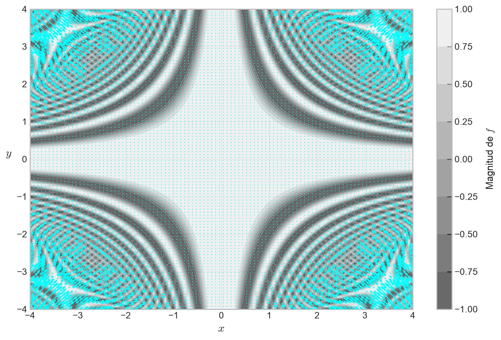
Podemos observar que el campo gradiente calculado apunta siempre en la dirección para la cual \(f\) crece en magnitud. La longitud de los vectores (es decir, la magnitud del gradiente) es mayor cuanto mayor sea la magnitud de \(f\). ◼︎
1.4.2 Regla de la cadena para campos escalares
Las derivadas parciales, como ya hemos visto previamente, no son más extensiones del concepto de derivada construido para funciones unidimensionales. Aplican exactamente las mismas reglas algebraicas para operar con ellas, incluyendo la regla de la cadena vista en el teorema (1.2). Sin embargo, no hemos generalizado aún dicho teorema para el caso de composiciones de funciones reales de variable vectorial. Es decir, funciones del tipo \(\left( g\circ f\right) \left( \mathbf{x} \right) =g\left( f\left( \mathbf{x} \right) \right)\).
En esta subsección, utilizaremos los conocimientos que desarrollamos de álgebra lineal para extender la regla de la cadena para este tipo de composiciones. Por lo tanto, partiremos enunciando el siguiente teorema.
TipTeorema 1.4
Sean \(f,g:U\subseteq \mathbb{R}^{n}\longrightarrow \mathbb{R}\) funciones diferenciables en el conjunto abierto \(U\) de \(\mathbb{R}^{n}\). Entonces la composición \(\left( g\circ f\right) \left( \mathbf{x} \right) =g\left( f\left( \mathbf{x} \right) \right)\) también es diferenciable, y podemos expresar sus derivadas parciales como
\[ \frac{\partial }{\partial x_{j}} \left( g\circ f\right) \left( \mathbf{x} \right) =\frac{\partial }{\partial x_{j}} \left( g\left( f\left( \mathbf{x} \right) \right) \right) =\frac{\partial g}{\partial f} \frac{\partial f}{\partial x_{j}} \tag{1.49} \]
Si observamos la fórmula (1.49), veremos que ésta se parece un poco a la fórmula de multiplicacion de matrices, para la cual establecimos que las dimensiones de las matrices correspondientes deben ser compatibles para la multiplicación. Si vamos de izquierda a derecha, la regla de la cadena exhibe propiedades similares: \(\partial f\) se muestra en el “denominador” del primer factor y en “numerador” del segundo factor. Si efectuamos esta multiplicación tratando a las expresiones involucradas como “fracciones”, la simplificación de términos semejantes nos llevará a la expresión \(\partial g/\partial x_{j}\).
Para esquematizar esta similitud, consideremos una función \(f:\mathbb{R}^{2}\longrightarrow \mathbb{R}\) de las variables \((x_{1},x_{2})\). Además, consideraremos la parametrización para tales valriables, digamos \(x_{1}(t)\) y \(x_{2}(t)\) en función de \(t\in \mathbb{R}\). Para calcular el gradiente de \(f\) con respecto a \(t\), necesitamos aplicar la regla de la cadena (1.49) como sigue,
\[ \nabla_{t} f=\frac{df}{dt} :=\left( \frac{\partial f}{\partial x_{1}} ,\frac{\partial f}{\partial x_{2}} \right) \left( \begin{array}{c}\displaystyle \frac{\partial x_{1}\left( t\right) }{\partial t} \\ \displaystyle \frac{\partial x_{2}\left( t\right) }{\partial t} \end{array} \right) =\frac{\partial f}{\partial x_{1}} \frac{\partial x_{1}}{\partial t} +\frac{\partial f}{\partial x_{2}} \frac{\partial x_{2}}{\partial t} \tag{1.50} \]
Ejemplo 1.12: Consideremos la función \(f(x_{1},x_{2})=x_{1}^{2}+2x_{2}\), donde \(x_{1}=\mathrm{sen}(t)\) y \(x_{2}=\cos(t)\). Entonces, usando la fórmula (1.50), obtenemos
\[ \begin{array}{lll}\nabla_{t} f&=&\displaystyle \frac{\partial f}{\partial x_{1}} \displaystyle \frac{\partial x_{1}}{\partial t} +\displaystyle \frac{\partial f}{\partial x_{2}} \displaystyle \frac{\partial x_{2}}{\partial t} \\ &=&2\ \mathrm{sen} \left( t\right) \left( \displaystyle \frac{\partial }{\partial t} \left( \mathrm{sen} \left( t\right) \right) \right) +2\left( \displaystyle \frac{\partial }{\partial t} \left( \cos \left( t\right) \right) \right) \\ &=&2\ \mathrm{sen} \left( t\right) \cos \left( t\right) -2\ \mathrm{sen} \left( t\right) =2\ \mathrm{sen} \left( t\right) \left( \cos \left( t\right) -1\right) \end{array} \tag{1.51} \]
◼︎
Si \(f(x_{1},x_{2})\) es una función de \(x_{1}\) y \(x_{2}\), donde \(x_{1}(s,t)\) y \(x_{2}(s,t)\) son a su vez funciones de las dos variables \(s\) y \(t\), entonces la regla de la cadena nos permite obtener las derivadas parciales
\[ \begin{array}{lll}\displaystyle \frac{\partial f}{\partial s} &=&\displaystyle \frac{\partial f}{\partial x_{1}} \displaystyle \frac{\partial x_{1}}{\partial s} +\displaystyle \frac{\partial f}{\partial x_{2}} \displaystyle \frac{\partial x_{2}}{\partial s} \\ \displaystyle \frac{\partial f}{\partial t} &=&\displaystyle \frac{\partial f}{\partial x_{1}} \displaystyle \frac{\partial x_{1}}{\partial t} +\displaystyle \frac{\partial f}{\partial x_{2}} \displaystyle \frac{\partial x_{2}}{\partial t} \end{array} \tag{1.52} \]
Y el gradiente podemos obtenerlo mediante una operación sencilla de multiplicación matricial,
\[ \frac{df}{d\left( s,t\right) } =\frac{\partial f}{\partial \mathbf{x} } \frac{\partial \mathbf{x} }{\partial \left( s,t\right) } =\underbrace{\left( \frac{\partial f}{\partial x_{1}} ,\frac{\partial f}{\partial x_{2}} \right) }_{=\frac{\partial f}{\partial \mathbf{x} } } \underbrace{\left( \begin{array}{cc}\displaystyle \frac{\partial x_{1}}{\partial s} &\displaystyle \frac{\partial x_{1}}{\partial t} \\ \displaystyle \frac{\partial x_{2}}{\partial s} &\displaystyle \frac{\partial x_{2}}{\partial t} \end{array} \right) }_{=\frac{\partial \mathbf{x} }{\partial \left( s,t\right) } } \tag{1.53} \]
Esta forma compacta de escribir la regla de la cadena como una multiplicación matricial tiene sentido solamente cuando definimos al gradiente como un vector fila. De otro modo, tendríamos que aplicar operaciones de transposición a fin de que las dimensiones de las matrices involucradas en los cálculos sean compatibles para las correspondientes multiplicaciones. Esto puede parecer trivial siempre que el gradiente permanezca como un vector fila, pero cuando dicho gradiente se convierte en un tensor (lo que discutiremos a continuación), la transposición deja de ser una trivialidad.
Ejemplo 1.13: Sea \(f:\mathbb{R}^{2}\longrightarrow \mathbb{R}\) una función de clase \(C^{2}\) y definamos \(g(u,v)=f(x,y)\), donde \(x=u+v\) e \(y=uv^{2}\). Suponiendo que
\[ \frac{\partial f}{\partial y} =2\ \wedge \ \frac{\partial^{2} f}{\partial x^{2}} =\frac{\partial^{2} f}{\partial x\partial y} =\frac{\partial^{2} f}{\partial y^{2}} =1 \tag{1.54} \]
en \((x,y)=(2,1)\). Vamos a usar la regla de la cadena para calcular
\[ \frac{\partial^{2} g}{\partial u^{2}} \left( 1,1\right) \ \wedge \ \frac{\partial^{2} g}{\partial v^{2}} \left( 1,1\right) \tag{1.55} \]
En efecto,
\[ \begin{array}{l}\displaystyle \frac{\partial g}{\partial u} =\left( \displaystyle \frac{\partial f}{\partial x} ,\displaystyle \frac{\partial f}{\partial y} \right) \left( \begin{array}{c}\displaystyle \frac{\partial x}{\partial u} \\ \displaystyle \frac{\partial y}{\partial u} \end{array} \right) =\displaystyle \frac{\partial f}{\partial x} \displaystyle \frac{\partial x}{\partial u} +\displaystyle \frac{\partial f}{\partial y} \displaystyle \frac{\partial y}{\partial u} =\displaystyle \frac{\partial f}{\partial x} +\displaystyle \frac{\partial f}{\partial y} v^{2}\\ \displaystyle \frac{\partial g}{\partial v} =\left( \displaystyle \frac{\partial f}{\partial x} ,\displaystyle \frac{\partial f}{\partial y} \right) \left( \begin{array}{c}\displaystyle \frac{\partial x}{\partial v} \\ \displaystyle \frac{\partial y}{\partial v} \end{array} \right) =\displaystyle \frac{\partial f}{\partial x} \displaystyle \frac{\partial x}{\partial v} +\displaystyle \frac{\partial f}{\partial y} \displaystyle \frac{\partial y}{\partial v} =\displaystyle \frac{\partial f}{\partial x} +\displaystyle \frac{\partial f}{\partial y} \left( 2uv\right) \end{array} \tag{1.56} \]
Ahora debemos calcular las derivadas parciales segundas \(\frac{\partial^{2} g}{\partial u^{2}}\) y \(\frac{\partial^{2} g}{\partial v^{2}}\). De esta manera, para la primera de estas derivadas, tenemos que
\[ \begin{array}{lll}\displaystyle \frac{\partial^{2} g}{\partial u^{2}} &=&\displaystyle \frac{\partial }{\partial u} \left( \displaystyle \frac{\partial f}{\partial x} +\displaystyle \frac{\partial f}{\partial y} v^{2}\right) \\ &=&\displaystyle \frac{\partial^{2} f}{\partial x^{2}} +\displaystyle \frac{\partial^{2} f}{\partial x\partial y} v^{2}+\displaystyle \frac{\partial^{2} f}{\partial x\partial y} v^{2}+\displaystyle \frac{\partial^{2} f}{\partial x^{2}} v^{4}\\ &=&\displaystyle \frac{\partial^{2} f}{\partial x^{2}} +2\displaystyle \frac{\partial^{2} f}{\partial x\partial y} v^{2}+\displaystyle \frac{\partial^{2} f}{\partial x^{2}} v^{4}\end{array} \tag{1.57} \]
Asimismo, para la segunda derivada de segundo orden tenemos
\[ \begin{array}{lll}\displaystyle \frac{\partial^{2} g}{\partial v^{2}} &=&\displaystyle \frac{\partial }{\partial v} \left( \displaystyle \frac{\partial f}{\partial x} +\displaystyle \frac{\partial f}{\partial y} \left( 2uv\right) \right) \\ &=&\displaystyle \frac{\partial^{2} f}{\partial x^{2}} +\displaystyle \frac{\partial^{2} f}{\partial x\partial y} \left( 2uv\right) +\displaystyle \frac{\partial^{2} f}{\partial x\partial y} \left( 2uv\right) +\displaystyle \frac{\partial^{2} f}{\partial y^{2}} \left( 4u^{2}v^{2}\right) +\displaystyle \frac{\partial f}{\partial y} \left( 2v\right) \\ &=&\displaystyle \frac{\partial^{2} f}{\partial x^{2}} +4uv\displaystyle \frac{\partial^{2} f}{\partial x\partial y} +4u^{2}v^{2}\displaystyle \frac{\partial^{2} f}{\partial y^{2}} +2v\displaystyle \frac{\partial f}{\partial y} \end{array} \tag{1.58} \]
Evaluando las expresiones anteriores en \(u=v=1\), lo que implica que \(x=2 \wedge y=1\), y utilizando la información provista en un principio, obtenemos
\[ \begin{array}{l}\displaystyle \frac{\partial^{2} g}{\partial u^{2}} \left( 1,1\right) =\displaystyle \frac{\partial^{2} f}{\partial x^{2}} \left( 2,1\right) +2\displaystyle \frac{\partial^{2} f}{\partial x\partial y} \left( 2,1\right) +\displaystyle \frac{\partial^{2} f}{\partial y^{2}} \left( 2,1\right) =4\\ \displaystyle \frac{\partial^{2} g}{\partial v^{2}} \left( 1,1\right) =\displaystyle \frac{\partial^{2} f}{\partial x^{2}} \left( 2,1\right) +4\displaystyle \frac{\partial^{2} f}{\partial x\partial y} \left( 2,1\right) +4\displaystyle \frac{\partial^{2} f}{\partial y^{2}} \left( 2,1\right) +2\displaystyle \frac{\partial f}{\partial y} \left( 2,1\right) =13\end{array} \tag{1.59} \]
◼
1.4.3 Gradiente de un campo vectorial
Hasta ahora, nos hemos preocupado de extender el concepto de derivada para funciones reales de variable vectorial del tipo \(f:U\subseteq \mathbb{R}^{n}\longrightarrow \mathbb{R}\), donde \(U\) es un conjunto abierto de \(\mathbb{R}^{n}\), mediante el concepto de gradiente. Sin embargo, no hay ningún problema en dar un paso más y extender este concepto a los campos vectoriales del tipo \(\mathbf{f}:U\subseteq \mathbb{R}^{m}\longrightarrow V\subseteq \mathbb{R}^{n}\) (es decir, campos vectoriales). Supongamos entonces que disponemos de una función de estas características, definida en todo punto \(\mathbf{x}\in \mathbb{R}^{m}\) matricialmente como
\[ \mathbf{f} \left( \mathbf{x} \right) =\left( \begin{array}{c}f_{1}\left( \mathbf{x} \right) \\ \vdots \\ f_{m}\left( \mathbf{x} \right) \end{array} \right) \in \mathbb{R}^{m} \tag{1.60} \]
Escribir un campo vectorial de esta manera nos permite ver a una función del tipo \(\mathbf{f}:U\subseteq \mathbb{R}^{m}\longrightarrow\) \(V\subseteq \mathbb{R}^{n}\) como un vector de funciones coordenadas \((f_{1},...,f_{n})^{\top}\), \(f_{j}:U\in \mathbb{R}^{n}\longrightarrow \mathbb{R}\), cuyas imágenes están todas en \(\mathbb{R}\). Debido a que las derivadas parciales de \(f_{j}\), en caso de existir, siguen las mismas reglas de diferenciación propuestas para el caso de funciones de una variable, entonces podemos redefinir la derivada parcial de \(\mathbf{f}\) con respecto a \(x_{i}\) como el vector
\[ \displaystyle \frac{\partial \mathbf{f} }{\partial x_{i}} =\left( \begin{array}{c}\displaystyle \frac{\partial f_{1}}{\partial x_{i}} \\ \vdots \\ \displaystyle \frac{\partial f_{m}}{\partial x_{i}} \end{array} \right) =\left( \begin{array}{c}\displaystyle \lim_{h\rightarrow 0} \displaystyle \frac{f_{1}\left( x_{1},...,x_{i-1},x_{i}+h,x_{i+1},...,x_{m}\right) -f_{1}\left( x_{1},...,x_{m}\right) }{h} \\ \vdots \\ \displaystyle \lim_{h\rightarrow 0} \displaystyle \frac{f_{n}\left( x_{1},...,x_{i-1},x_{i}+h,x_{i+1},...,x_{m}\right) -f_{n}\left( x_{1},...,x_{m}\right) }{h} \end{array} \right) \tag{1.61} \]
De la definición (1.10), sabemos que el gradiente de un campo escalar \(f:U\subseteq \mathbb{R}^{m}\longrightarrow \mathbb{R}\) es un vector fila cuyas componentes son las derivadas parciales de \(f\). Sin embargo, en la ecuación (1.61), cada derivada parcial de \(\mathbf{f}\), digamos \(\frac{\partial \mathbf{f}}{\partial x_{i}}\), es un vector columna. Por lo tanto, el gradiente del campo vectorial \(\mathbf{f}:U\subseteq \mathbb{R}^{m}\longrightarrow V\subseteq \mathbb{R}^{n}\) con respecto al punto \(\mathbf{x} \in \mathbb{R}^{m}\) puede expresarse por medio de una matriz de \(n\times m\), ya que
\[ \displaystyle \frac{d\mathbf{f} \left( \mathbf{x} \right) }{d\mathbf{x} } :=\left( \displaystyle \frac{\partial \mathbf{f} \left( \mathbf{x} \right) }{\partial x_{1}} ,\displaystyle \frac{\partial \mathbf{f} \left( \mathbf{x} \right) }{\partial x_{2}} ,...,\displaystyle \frac{\partial \mathbf{f} \left( \mathbf{x} \right) }{\partial x_{m}} \right) =\left( \begin{array}{cccc}\displaystyle \frac{\partial f_{1}}{\partial x_{1}} \left( \mathbf{x} \right) &\displaystyle \frac{\partial f_{1}}{\partial x_{2}} \left( \mathbf{x} \right) &\cdots &\displaystyle \frac{\partial f_{1}}{\partial x_{m}} \left( \mathbf{x} \right) \\ \displaystyle \frac{\partial f_{2}}{\partial x_{1}} \left( \mathbf{x} \right) &\displaystyle \frac{\partial f_{2}}{\partial x_{2}} \left( \mathbf{x} \right) &\cdots &\vdots \\ \vdots &\vdots &\ddots &\vdots \\ \displaystyle \frac{\partial f_{n}}{\partial x_{1}} \left( \mathbf{x} \right) &\displaystyle \frac{\partial f_{n}}{\partial x_{2}} \left( \mathbf{x} \right) &\cdots &\displaystyle \frac{\partial f_{n}}{\partial x_{m}} \left( \mathbf{x} \right) \end{array} \right) \in \mathbb{R}^{n\times m} \tag{1.62} \]
Lo anterior motiva la siguiente definición.
Definición 1.11 – Matriz Jacobiana: Sea \(\mathbf{f}:U\subseteq \mathbb{R}^{m}\longrightarrow V\subseteq \mathbb{R}^{n}\) un campo vectorial definido en el conjunto abierto \(U\) de \(\mathbb{R}^{m}\). Sean \(f_{i}:U\subseteq \mathbb{R}^{m}\longrightarrow \mathbb{R}\) las funciones coordenadas de \(\mathbf{f}\). La matriz en el lado derecho de la ecuación (1.62), compuesta por todas las derivadas parciales de las funciones coordenadas \(f_{1},...,f_{n}\) respecto de las variables \(x_{1},...,x_{m}\) es llamada matriz Jacobiana de \(\mathbf{f}\) en \(\mathbf{x}\in \mathbb{R}^{n}\), y se denota como \(\mathbf{J}(\mathbf{x})\), \(\frac{d\mathbf{f}}{d\mathbf{x}}\) o \(\nabla_{\mathbf{x}}\mathbf{f}\).
Notemos que, para el caso de una función \(\mathbf{f}:U\subseteq \mathbb{R}^{m}\longrightarrow V\subseteq \mathbb{R}^{n}\) con \(m=1\), la matriz Jacobiana se reduce al gradiente en la ecuación (1.44). Es decir, la matriz Jacobiana es una generalización del concepto de gradiente para el caso de campos vectoriales. Cuando \(\mathbf{f}:U\subseteq \mathbb{R}^{m}\longrightarrow V\subseteq \mathbb{R}^{n}\), la matriz Jacobiana de \(\mathbf{f}\) es de dimensión \(n\times m\).
Si \(m=n\), entonces \(\mathbf{f}\) es un campo vectorial cuyo dominio y codominio tienen la misma dimensión y, por lo tanto, en los puntos donde sus derivadas parciales existan, su matriz Jacobiana es cuadrada (es decir, \(\mathbf{J}(\mathbf{x})\in \mathbb{R}^{n\times n}\)). Podemos, por lo tanto, calcular el determinante de esta matriz Jacobiana, llamada determinante Jacobiano (o simplemente “jacobiano”) de \(\mathbf{f}\), y que normalmente suele denotarse como
\[ \frac{\partial \left( f_{1},...,f_{n}\right) }{\partial \left( x_{1},...,x_{n}\right) } =\det \left( \mathbf{J} \left( \mathbf{x} \right) \right) \tag{1.63} \]
El jacobiano de un campo vectorial en un punto \(\mathbf{x}\in \mathbb{R}^{n}\) nos entrega información valiosa de \(\mathbf{f}\) en el entorno de \(\mathbf{x}\). Por ejemplo, si las derivadas parciales de \(\mathbf{f}\) existen en un entorno abierto centrado en \(\mathbf{x}\), entonces la matriz Jacobiana es no singular y, en consecuencia, su determinante es no nulo, lo que implica que existe la función inversa \(\mathbf{f}^{-1}\) (este resultado se conoce en Análisis como teorema de la función inversa). Además, si el jacobiano de \(\mathbf{f}\) es positivo en \(\mathbf{x}\), entonces \(\mathbf{f}\) preserva su orientación en un entorno abierto centrado en \(\mathbf{x}\), y la invierte en caso de que el jacobiano de \(\mathbf{f}\) sea negativo. El valor absoluto del jacobiano de \(\mathbf{f}\) en \(\mathbf{x}\) nos entrega el factor de escalamiento por el cual la función \(\mathbf{f}\) permite expandir o contraer volúmenes en entornos de \(\mathbf{x}\). Esta propiedad es importante cuando realizamos cambios de variables en integrales múltiples definidas sobre un dominio \(\Omega\) de \(\mathbb{R}^{n}\), ya que el jacobiano actúa como un factor de escalamiento entre el hipervolumen definido por la región \(\Omega\) y el hipervolumen resultante del cambio de variables. Este esquema de transformación se ilustra en la Figura 1.6.
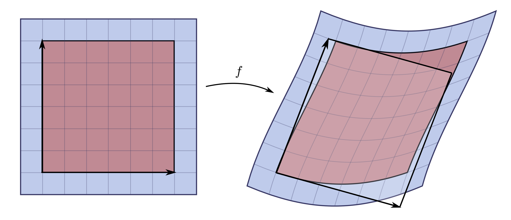
Ejemplo 1.14 – Transformación de coordenadas rectangulares a coordenadas polares: Como se suele enseñar en cursos de cálculo o de física, la transformación de coordenadas rectangulares (sistema \((x,y)\)) a coordenadas polares (sistema \((r, \theta)\)) viene dada por la función \(\mathbf{f}:\mathbb{R}^{+}\times [0, 2\pi)\longrightarrow \mathbb{R}^{2}\), definida como
\[ \mathbf{f} \left( r,\theta \right) =\left( x\left( r,\theta \right) ,y\left( r,\theta \right) \right) =\left( r\cos \left( \theta \right) ,r\ \mathrm{sen} \left( \theta \right) \right) \tag{1.64} \]
La matriz Jacobiana resulta
\[ \mathbf{J} \left( r,\theta \right) =\left( \begin{array}{cc}\displaystyle \frac{\partial x}{\partial r} &\displaystyle \frac{\partial x}{\partial \theta } \\ \displaystyle \frac{\partial y}{\partial r} &\displaystyle \frac{\partial y}{\partial \theta } \end{array} \right) =\left( \begin{array}{rr}\cos \left( \theta \right) &-r\ \mathrm{sen} \left( \theta \right) \\ \mathrm{sen} \left( \theta \right) &r\cos \left( \theta \right) \end{array} \right) \tag{1.65} \]
Por lo tanto, se tiene que \(\det \left( \mathbf{J} \left( r,\theta \right) \right)=r\). De esta manera, en una integral doble, si quisiéramos implementar un cambio de variables en coordenadas rectangulares a polares, debemos añadir un factor de escalamiento igual a \(r\) en el integrando. ◼
En esta sección, hemos definido el concepto de derivada de una función, y lo hemos trabajado y extendido al caso de campos escalares y vectoriales. El esquema que se muestra en la Figura 1.7 permite entender, de manera resumida, la dimensión intrínseca a estas derivadas. Si \(f:\mathbb{R}\longrightarrow \mathbb{R}\) (una función escalar), el gradiente es simplemente un escalar (la derivada propiamente tal). Para \(f:\mathbb{R}^{d}\longrightarrow \mathbb{R}\) (una función escalar de variable vectorial), el gradiente resulta ser un vector de dimensión \(1\times d\) (una matriz fila). Para \(\mathbf{f}:\mathbb{R}\longrightarrow \mathbb{R}^{n}\) (una funcion vectorial de variable escalar), el gradiente resulta ser un vector de dimensión \(n\times 1\) (una matriz columna). Y, finalmente, para una función \(\mathbf{f}:\mathbb{R}^{d}\longrightarrow \mathbb{R}^{n}\) (un campo vectorial), el gradiente resulta ser una matriz de \(n\times d\).
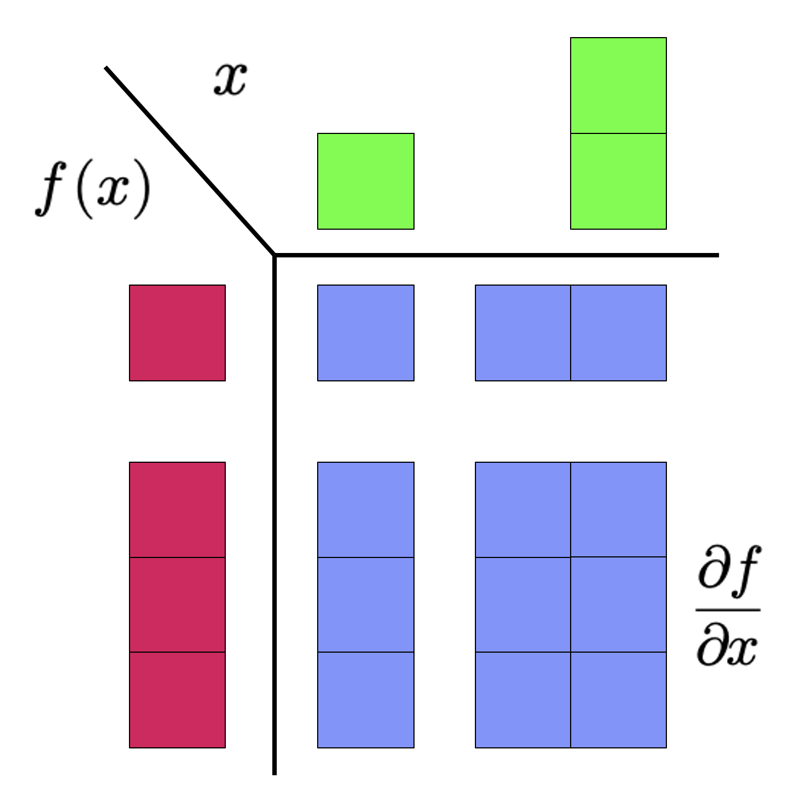
Ejemplo 1.15: Consideremos la función \(\mathbf{f}(\mathbf{x})=\mathbf{A}\mathbf{x}\), donde \(\mathbf{f}(\mathbf{x})\in \mathbb{R}^{M},\mathbf{A}\in \mathbb{R}^{M\times N}\) y \(\mathbf{x}\in \mathbb{R}^{N}\). Para calcular el gradiente \(\nabla_{\mathbf{x}}\mathbf{f}\), primero debemos determinar la dimensión de dicho gradiente. Sin embargo, como \(\mathbf{f}:\mathbb{R}^{N}\longrightarrow \mathbb{R}^{M}\), sabemos que \(\dim(\nabla_{\mathbf{x}}\mathbf{f})\). Ahora debemos calcular las derivadas parciales de \(\mathbf{f}\) con respecto a \(x_{1},...,x_{n}\). En efecto,
\[ f_{i}\left( \mathbf{x} \right) =\sum^{N}_{j=1} a_{ij}x_{j}\ \Longrightarrow \ \frac{\partial f_{i}}{\partial x_{j}} =a_{ij} \tag{1.66} \]
Donde \(a_{ij}\) es el elemento de la matriz \(\mathbf{A}\) ubicado en la fila \(i\) y la columna \(j\). Si tomamos las derivadas y las ordenamos en su estructura matricial vista en la ecuación (1.62), obtenemos
\[ \displaystyle \frac{d\mathbf{f} }{d\mathbf{x} } =\mathbf{J} \left( \mathbf{x} \right) =\left( \begin{array}{ccc}\displaystyle \frac{\partial f_{1}}{\partial x_{1}} &\cdots &\displaystyle \frac{\partial f_{1}}{\partial x_{N}} \\ \vdots &\ddots &\vdots \\ \displaystyle \frac{\partial f_{M}}{\partial x_{1}} &\cdots &\displaystyle \frac{\partial f_{M}}{\partial x_{N}} \end{array} \right) =\left( \begin{matrix}a_{11}&\cdots &a_{1N}\\ \vdots &\ddots &\vdots \\ a_{M1}&\cdots &a_{MN}\end{matrix} \right) =\mathbf{A} \in \mathbb{R}^{M\times N} \tag{1.67} \]
◼
Ejemplo 1.16: Consideremos la función \(h:\mathbb{R}\longrightarrow \mathbb{R}\) definida como \(h(t)=(f\circ \mathbf{g})(t)\), donde \(f:\mathbb{R}^{2}\longrightarrow \mathbb{R}\) y \(\mathbf{g}:\mathbb{R}\longrightarrow \mathbb{R}^{2}\) se definen como
\[ f\left( x_{1},x_{2}\right) =\exp \left( x_{1}x^{2}_{2}\right) \wedge \mathbf{g} \left( t\right) =\left( \begin{matrix}t\cos \left( t\right) \\ t\ \mathrm{sen} \left( t\right) \end{matrix} \right) =\left( \begin{matrix}x_{1}\left( t\right) \\ x_{2}\left( t\right) \end{matrix} \right) \tag{1.68} \]
Vamos a calcular el gradiente \(\nabla_{t}h\). En efecto, dado que \(f:\mathbb{R}^{2}\longrightarrow \mathbb{R}\) y \(\mathbf{g}:\mathbb{R}\longrightarrow \mathbb{R}^{2}\), observamos que
\[ \frac{\partial f}{\partial \mathbf{x} } \in \mathbb{R}^{1\times 2} \wedge \frac{\partial \mathbf{g} }{\partial t} \in \mathbb{R}^{2\times 1} \tag{1.69} \]
Podemos, pues, calcular el gradiente \(\nabla_{t}h\) aplicando la regla de la cadena como sigue
\[ \begin{array}{lll}\nabla_{t} h&=&\displaystyle \frac{\partial f}{\partial \mathbf{x} } \displaystyle \frac{\partial \mathbf{x} }{\partial t} \\ &=&\left( \displaystyle \frac{\partial f}{\partial x_{1}} ,\displaystyle \frac{\partial f}{\partial x_{2}} \right) \left( \begin{array}{c}\displaystyle \frac{\partial x_{1}}{\partial t} \\ \displaystyle \frac{\partial x_{2}}{\partial t} \end{array} \right) \\ &=&\left( \exp \left( x_{1}x^{2}_{2}\right) x^{2}_{2},\ 2\exp \left( x_{1}x^{2}_{2}\right) x_{1}x_{2}\right) \left( \begin{matrix}\cos \left( t\right) -t\ \mathrm{sen} \left( t\right) \\ \mathrm{sen} \left( t\right) +t\cos \left( t\right) \end{matrix} \right) \\ &=&\exp \left( x_{1}x^{2}_{2}\right) \left( x^{2}_{2}\left( \cos \left( t\right) -t\ \mathrm{sen} \left( t\right) \right) +2x_{1}x_{2}\left( \mathrm{sen} \left( t\right) +\cos \left( t\right) \right) \right) \end{array} \tag{1.70} \]
◼
Ejemplo 1.17 – Gradiente de una función de pérdida en un modelo de regresión lineal: Consideremos el siguiente modelo lineal
\[ \mathbf{y}=\mathbf{X}\mathbf{\theta} \tag{1.71} \]
Donde \(\mathbf{\theta}\in \mathbb{R}^{d}\) es un vector de parámetros (o de coeficientes); \(\mathbf{X}\in \mathbb{R}^{n\times d}\) es una matriz que representa los datos de entrada del modelo, donde cada fila de esta matriz representa una observación o instancia, y cada columna un atributo o variable asociada al problema que deseamos modelar; e \(\mathbf{y}\in \mathbb{R}^{n}\) es un vector de valores objetivo que queremos utilizar para construir nuestro modelo. Definimos las funciones
\[ \mathcal{L} \left( \mathbf{e} \right) :=\left\Vert \mathbf{e} \right\Vert^{2} \ ;\ \mathbf{e} \left( \mathbf{\theta } \right) :=\mathbf{y} -\mathbf{X} \mathbf{\theta } \tag{1.72} \]
Donde \(\mathbf{e}(\mathbf{\theta})\) es el error cometido por nuestro modelo, que naturalmente va a depender de la elección de los parámetros que constituyen el vector \(\mathbf{\theta}\). Queremos calcular la derivada \(\frac{\partial \mathcal{L}}{\partial \mathbf{\theta}}\), para lo cual utilizaremos la regla de la cadena. La función \(\mathcal{L}\) es llamada función de pérdida del modelo de regresión lineal y, en este caso, se trata de una función que determina el promedio de los errores cometidos por el modelo elevados al cuadrado (comúnmente conocida como error cuadrático medio). Por lo tanto, aplicando efectivamente la regla de la cadena, obtenemos
\[ \frac{\partial \mathcal{L} }{\partial \mathbf{\theta } } =\frac{\partial \mathcal{L} }{\partial \mathbf{e} } \frac{\partial \mathbf{e} }{\partial \mathbf{\theta } } \tag{1.73} \]
Donde el \(j\)-ésimo elemento de (1.73) está dado por
\[ \frac{\partial \mathcal{L} }{\partial \mathbf{\theta } } \left( 1,j\right) =\sum^{n}_{i=1} \frac{\partial \mathcal{L} }{\partial \mathbf{e} } \left( i\right) \frac{\partial \mathbf{e} }{\partial \mathbf{\theta } } \left( i,j\right) \tag{1.74} \]
Por propiedades de vectores (y matrices en general), sabemos \(\left\Vert \mathbf{e} \right\Vert^{2} =\mathbf{e}^{\top } \mathbf{e}\). Luego tenemos,
\[ \frac{\partial \mathcal{L} }{\partial \mathbf{e} } =2\mathbf{e}^{\top } \in \mathbb{R}^{1\times n} \wedge \frac{\partial \mathbf{e} }{\partial \mathbf{\theta } } =-\mathbf{X} \in \mathbb{R}^{n\times d} \tag{1.75} \]
Así que el gradiente de la función de costo \(\mathcal{L}\) es
\[ \frac{\partial \mathcal{L} }{\partial \mathbf{\theta } } =-2\mathbf{e}^{\top } \mathbf{X} =-2\underbrace{\left( \mathbf{y}^{\top } -\mathbf{\theta }^{\top } \mathbf{X}^{\top } \right) }_{\in \mathbb{R}^{1\times n} } \underbrace{\mathbf{X} }_{\in \mathbb{R}^{n\times d} } \in \mathbb{R}^{1\times d} \tag{1.76} \]
◼
1.4.4 Gradiente de funciones matriciales
En todo el backgorund teórico de los algoritmos de machine learning, será común encontrarnos con situaciones en las cuales necesitaremos calcular gradientes de ciertas funciones cuyos argumentos sean matrices e, incluso, con respecto a variables matriciales. El resultado será un objeto matemático conocido como tensor. Podemos imaginar estos tensores como arreglos multidimensionales cuyas componentes, en todas las dimensiones, son las derivadas parciales involucradas. Por ejemplo, si calculamos el gradiente de una matriz \(\mathbf{A}\in \mathbb{R}^{m\times n}\) con respecto a otra matriz \(\mathbf{B}\in \mathbb{R}^{p\times q}\), el resultado será un tensor Jacobiano de dimensión \((m\times n)\times (p\times q)\); es decir, un arreglo tetradimensional cuyas entradas suelen escribirse (en este ejemplo) como \(J_{ijkl}=\frac{\partial a_{ij}}{\partial b_{kl}}\), donde \(a_{ij}\) es el elemento (\({ij}\))-ésimo de \(\mathbf{A}\), y \(b_{kl}\) es el (\(kl\))-ésimo elemento de \(\mathbf{B}\).
Debido a que las matrices representan transformaciones lineales, podemos explotar el hecho de que existe un isomorfismo de espacios vectoriales (una transformación lineal invertible) entre el conjunto \(\mathbb{R}^{m\times n}\) de matrices de dimensión \(m\times n\) y el espacio \(\mathbb{R}^{mn}\) de vectores con \(mn\) componentes. Por lo tanto, podemos recomponer nuestras matrices (literalmente, aplanarlas) en vectores en \(\mathbb{R}^{mn}\) y \(\mathbb{R}^{pq}\), respectivamente (como hicimos en el ejemplo anterior). El gradiente calculado sobre estos resultados vectoriales resulta ahora en un tensor Jacobiano de dimensión \(mn\times pq\).
La Figura 1.8 esquematiza este enfoque dimensional.
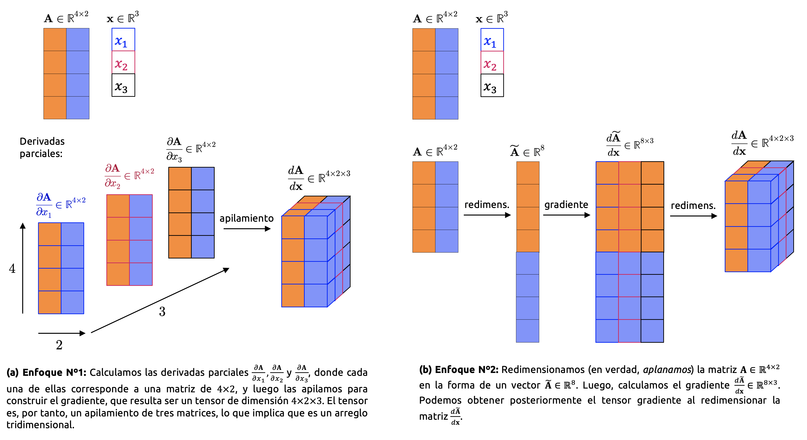
Ejemplo 1.18 – Gradiente de una función vectorial con variable matricial: Consideremos la siguiente función \(\mathbf{f}:\mathbb{R}^{m\times n}\longrightarrow \mathbb{R}^{m}\), definida como
\[ \mathbf{f} \left( \mathbf{A} \right) =\mathbf{A} \mathbf{x} \tag{1.77} \]
Donde \(\mathbf{A} =\left\{ a_{ij}\right\} \in \mathbb{R}^{m\times n}\). Vamos a calcular el gradiente \(\nabla_{\mathbf{A}}\mathbf{f}\). Para ello observamos que, conforme el esquema de la Figura 1.8, dicho gradiente debe corresponder a un tensor de dimensión \(m\times (m\times n)\). Aplicando la fórmula (1.62), obtenemos
\[ \displaystyle \frac{d\mathbf{f} }{d\mathbf{A} } =\nabla_{\mathbf{A} } \mathbf{f} =\left( \begin{array}{c}\displaystyle \frac{\partial f_{1}}{\partial \mathbf{A} } \\ \displaystyle \frac{\partial f_{2}}{\partial \mathbf{A} } \\ \vdots \\ \displaystyle \frac{\partial f_{m}}{\partial \mathbf{A} } \end{array} \right) \ ;\ \displaystyle \frac{\partial f_{1}}{\partial \mathbf{A} } \in \mathbb{R}^{1\times \left( m\times n\right) } \tag{1.78} \]
Para calcular las derivadas parciales respectivas, puede resultar útil escribir \(\mathbf{f} \left( \mathbf{A} \right) =\mathbf{A} \mathbf{x}\), de forma explícita como una multiplicación matricial. De esta manera tenemos
\[ \mathbf{f} \left( \mathbf{A} \right) =\mathbf{A} \mathbf{x} =\left( \begin{matrix}a_{11}&\cdots &a_{1n}\\ \vdots &\ddots &\vdots \\ a_{m1}&\cdots &a_{mn}\end{matrix} \right) \left( x_{1},...,x_{n}\right) \Longrightarrow f_{i}\left( \mathbf{A} \right) =\sum^{n}_{j=1} a_{ij}x_{j}\ \left( i=1,...,m\right) \tag{1.79} \]
Así que las derivadas parciales respectivas pueden escribirse como
\[ \frac{\partial f_{i}}{\partial a_{iq}} =x_{q} \tag{1.80} \]
para la columna \(q\)-ésima de la matriz \(\mathbf{A}\). Esto nos permite calcular las derivadas parciales de \(f_{i}\) con respecto a una fila de \(\mathbf{A}\) como
\[ \frac{\partial f_{i}}{\partial \mathbf{a}_{i} } =\mathbf{x}^{\intercal } \in \mathbb{R}^{1\times 1\times n} \wedge \frac{\partial f_{i}}{\partial \mathbf{a}_{k} |_{k\neq i}} =\mathbf{0}^{\top } \in \mathbb{R}^{1\times 1\times n} \tag{1.81} \]
Ahora debemos poner mucha atención para poder corregir las dimensiones resultantes. Ya que \(f_{i}\) aplica sobre \(\mathbb{R}\) y cada fila de \(\mathbf{A}\) es de dimensión \(1\times n\), obtenemos un tensor de \(1\times 1\times n\) como la derivada parcial de \(f_{i}\) con respecto a una fila \(\mathbf{A}\). De este modo, aplicamos las derivadas parciales expresadas en la ecuación (1.81) y obtenemos el gradiente deseado, que es
\[ \displaystyle \frac{\partial f_{i}}{\partial \mathbf{a}_{i} } =\left( \begin{array}{c}\mathbf{0}^{\top } \\ \vdots \\ \mathbf{0}^{\top } \\ \mathbf{x}^{\top } \\ \mathbf{0}^{\top } \\ \vdots \\ \mathbf{0}^{\top } \end{array} \right) \in \mathbb{R}^{1\times \left( m\times n\right) } \tag{1.82} \]
◼
Ejemplo 1.19 – Gradiente de una función matricial de variable matricial: Consideremos ahora una función del tipo \(\mathbf{F}:\mathbb{R}^{m\times n}\longrightarrow \mathbb{R}^{n\times n}\), definida explícitamente como
\[ \mathbf{K} :=\mathbf{F} \left( \mathbf{X} \right) =\mathbf{X}^{\top } \mathbf{X} \tag{1.83} \]
Queremos calcular el gradiente \(\nabla_{\mathbf{X}}\mathbf{F}\). Este problema no es trivial en lo absoluto y, para resolverlo, es útil entender cual es la dimensión que debe tener el gradiente que queremos calcular (que, recordemos, se trata de un tensor). Por lo tanto, conforme a nuestro esquema de la Figura 1.8, sabemos que la dimensión de este tensor es \((n\times n)\times (m\times n)\). Además, poniendo \(\mathbf{K} =\left\{ k_{pq}\right\} \in \mathbb{R}^{n\times n}\), podemos escribir
\[ \frac{dk_{pq}}{d\mathbf{X} } \in \mathbb{R}^{1\times m\times n} \tag{1.84} \]
Para \(p,q=1,...,n\), donde \(k_{pq}\) es el elemento en la fila \(p\) y columna \(q\) de la matriz \(\mathbf{K}=\mathbf{F}(\mathbf{X})\). Si denotamos la \(i\)-ésima columna de \(\mathbf{X}\) como \(\mathbf{x}_{i}\), cada elemento de \(\mathbf{K}\) puede expresarse como el producto interno usual (en \(\mathbb{R}^{n}\)) de dos columnas correspondientes de \(\mathbf{X}\). Es decir,
\[ k_{pq}=\mathbf{x}^{\top }_{p} \mathbf{x}_{q} =\sum^{m}_{s=1} x_{sp}x_{sq} \tag{1.85} \]
Al calcular la derivada parcial \(\frac{\partial k_{pq}}{\partial x_{ij}}\), obtenemos
\[ \frac{\partial k_{pq}}{\partial x_{ij}} =\sum^{m}_{s=1} \frac{\partial }{\partial x_{ij}} \left( x_{sp}x_{sq}\right) =\partial_{pqij} =\begin{cases}x_{iq}&;\ \mathrm{si} \ j=p\wedge p\neq q\\ x_{ip}&;\ \mathrm{si} \ j=q\wedge p\neq q\\ 2x_{iq}&;\ \mathrm{si} \ j=p\wedge p=q\\ 0&;\ \mathrm{en} \ \mathrm{otro} \ \mathrm{caso} \end{cases} \tag{1.86} \]
Sabemos que el gradiente debe tener una dimensión igual a \((n\times n)\times (m\times n)\), y cada una de las entradas del tensor correspondiente está dada por el valor \(\partial_{pqij}\) previamente definido, donde \(p,q,j=1,...,n\) e \(i=1,...,m\). ◼
1.4.5 Algunos gradientes matriciales típicos en machine learning
Por el momento, no profundizaremos en el análisis tensorial. No haremos el intento (aún) de entregar una definición matemática rigurosa de lo que es un tensor, porque, para efectos prácticos, será necesario solamente conocer algunas derivadas matriciales (gradientes) usuales en la construcción y desarrollo de algoritmos de machine learning. En las siguientes fórmulas matriciales, consideraremos que:
- \(\mathbf{A}\) y \(\mathbf{X}\) son matrices compatibles para la multiplicación.
- \(\mathbf{a}\), \(\mathbf{b}\) y \(\mathbf{s}\) son vectores compatibles para la multiplicación con las matrices \(\mathbf{A}\) y \(\mathbf{B}\).
- \(\mathbf{F}\) denota a una función matricial de variable matricial. Cuando escribimos \(\mathbf{F}(\mathbf{X})^{-1}\), nos referimos a la inversa de la matriz \(\mathbf{F}(\mathbf{X})\), no a la función inversa \(\mathbf{F}^{-1}\).
Las fórmulas de gradientes matriciales de interés se muestran a continuación:
Gradiente de la transposición de una función matricial:
\[ \frac{\partial }{\partial \mathbf{X}} \left( \mathbf{F}(\mathbf{X})^{\top} \right) = \left( \frac{\partial \mathbf{F}(\mathbf{X})}{\partial \mathbf{X}} \right)^{\top} \tag{1.87} \]
Gradiente de la traza de una función matricial:
\[ \frac{\partial }{\partial \mathbf{X}} \left( \mathrm{tr}(\mathbf{F}(\mathbf{X})) \right) = \mathrm{tr} \left( \frac{\partial \mathbf{F}(\mathbf{X})}{\partial \mathbf{X}} \right) \tag{1.88} \]
Gradiente del determinante de una función matricial:
\[ \frac{\partial }{\partial \mathbf{X}} \left( \det(\mathbf{F}(\mathbf{X})) \right) = \det(\mathbf{F}(\mathbf{X})) \, \mathrm{tr} \left( \mathbf{F}(\mathbf{X})^{-1} \frac{\partial \mathbf{F}(\mathbf{X})}{\partial \mathbf{X}} \right) \tag{1.89} \]
Gradiente de la inversa de una matriz:
\[ \frac{\partial }{\partial \mathbf{X}} \left( \mathbf{F}(\mathbf{X})^{-1} \right) = -\mathbf{F}(\mathbf{X})^{-1} \left( \frac{\partial \mathbf{F}(\mathbf{X})}{\partial \mathbf{X}} \right) \mathbf{F}(\mathbf{X})^{-1} \tag{1.90} \]
Gradiente de la forma \(\mathbf{a}^{\top}\mathbf{X}^{-1}\mathbf{b}\):
\[ \frac{\partial }{\partial \mathbf{X}} \left( \mathbf{a}^{\top}\mathbf{X}^{-1}\mathbf{b} \right) = -(\mathbf{X}^{-1})^{\top}\mathbf{a}\mathbf{b}^{\top}(\mathbf{X}^{-1})^{\top} \tag{1.91} \]
Gradiente de una forma lineal:
\[ \frac{\partial }{\partial \mathbf{x}} \left( \mathbf{x}^{\top}\mathbf{a} \right) = \frac{\partial }{\partial \mathbf{x}} \left( \mathbf{a}^{\top}\mathbf{x} \right) = \mathbf{a}^{\top} \tag{1.92} \]
Gradiente de una forma bilineal matricial:
\[ \frac{\partial }{\partial \mathbf{X}} \left( \mathbf{a}^{\top}\mathbf{X}\mathbf{b} \right) = \mathbf{a}\mathbf{b}^{\top} \tag{1.93} \]
Gradiente de una forma cuadrática vectorial:
\[ \frac{\partial }{\partial \mathbf{x}} \left( \mathbf{x}^{\top}\mathbf{B}\mathbf{x} \right) = \mathbf{x}^{\top}\left( \mathbf{B}+\mathbf{B}^{\top} \right) \tag{1.94} \]
Gradiente de una forma cuadrática ponderada:
\[ \frac{\partial }{\partial \mathbf{s}} \left( \mathbf{x}-\mathbf{A}\mathbf{s} \right)^{\top} \mathbf{W} \left( \mathbf{x}-\mathbf{A}\mathbf{s} \right) = -2\left( \mathbf{x}-\mathbf{A}\mathbf{s} \right)^{\top}\mathbf{W}\mathbf{A} \tag{1.95} \]
En este caso, \(\mathbf{W}^{\top}=\mathbf{W}\).
1.5 Comentarios finales
Con este apunte hemos dado el primer paso serio hacia una de las ideas más poderosas de toda la matemática aplicada, que es describir el cambio local de una cantidad determinada. A lo largo del desarrollo vimos que la derivada, en su forma más elemental, nace como una razón de cambio entre perturbaciones pequeñas. Sin embargo, conforme extendimos esta noción hacia funciones de varias variables, campos escalares, campos vectoriales y funciones matriciales, quedó claro que el cálculo diferencial no consiste sólo en “derivar fórmulas”, sino en construir un lenguaje preciso para estudiar sensibilidad, dirección, dependencia y estructura local.
La derivada de una función de una variable permitió formalizar la pendiente de la recta tangente y, con ello, la mejor aproximación lineal local de una función. A partir de allí, las reglas algebraicas de derivación y la regla de la cadena mostraron que incluso funciones complejas pueden diferenciarse de manera sistemática si entendemos cómo están compuestas. Las series de Taylor reforzaron esta idea desde otra perspectiva: Una función suficientemente regular puede ser reemplazada localmente por un polinomio, lo que conecta el cálculo diferencial con la aproximación numérica, la estabilidad y el análisis local de modelos.
El paso hacia varias variables amplificó notablemente el panorama que establecimos en primera instancia. Las derivadas parciales nos enseñaron que, en dimensiones mayores, el cambio deja de ser unidireccional. Ahora podemos estudiar qué ocurre cuando perturbamos una coordenada manteniendo las otras fijas. El gradiente apareció entonces como el objeto natural que reúne toda esa información de primer orden en una sola entidad algebraica. En el caso de campos escalares, el gradiente apunta en la dirección de crecimiento más pronunciado. En el caso de campos vectoriales, su generalización natural es la matriz Jacobiana, que actúa como la mejor aproximación lineal local de una transformación multivariable.
Ese punto es particularmente importante. La matriz Jacobiana no es sólo una colección de derivadas parciales. Es, en esencia, la representación matricial de cómo una transformación deforma localmente el espacio. Por eso su determinante controla expansión, contracción y cambio de orientación, y por eso mismo aparece de manera natural en cambio de variables, en teoría local de funciones inversas y en muchísimos problemas de modelamiento.
Desde la perspectiva del aprendizaje automático, este apunte instala una idea central que volverá una y otra vez: Entrenar un modelo equivale, en gran medida, a navegar una función de pérdida en un espacio de parámetros de gran dimensión. Para poder hacerlo, necesitamos gradientes. Necesitamos saber cómo cambia la pérdida cuando modificamos un peso, un sesgo, una matriz o un vector de parámetros. Por eso la regla de la cadena, la matriz Jacobiana y las fórmulas de derivación matricial no son meras curiosidades formales, sino que constituyen el mecanismo matemático que hace posible el aprendizaje por descenso de gradiente, retropropagación y optimización numérica en general.
También hay una enseñanza estructural importante en este apunte. A medida que la naturaleza de la variable cambia, ya sea de escalar a vector, o de vector a matriz, también cambia la naturaleza del gradiente. A veces es un número, a veces un vector fila, a veces una matriz y, en casos más generales, un tensor. Esto no es un detalle notacional. Expresa que la derivación es una operación sensible a la geometría del objeto sobre el cual estamos trabajando. Entender bien esa transición de dimensiones será crucial más adelante, especialmente cuando abordemos optimización multivariable, modelos estadísticos y aprendizaje profundo.
Con esto, queda establecida la base diferencial mínima que necesitamos para estudiar fenómenos más ricos: Aproximaciones de segundo orden, curvatura, óptimos locales, métodos iterativos y problemas de decisión bajo restricciones. En otras palabras, este apunte no sólo introduce herramientas técnicas, sino que inaugura una nueva forma de pensar, orientada a entender un modelo a través de cómo responde frente a perturbaciones pequeñas. Y esa, precisamente, será la puerta de entrada hacia lo que sigue. Porque una vez que sabemos medir cambio local, estamos en condiciones de preguntar algo aún más interesante, y es qué significa optimizar, cuándo un punto crítico representa un mínimo o un máximo, y cómo aprovechar esa información para construir algoritmos que aprendan.